K-Means Clustering pada Data Polutan Udara: Implementasi Python dan KNIME#
Catatan ini adalah bagian 2 dari 2 analisis data polutan udara. Data yang dipakai adalah hasil ekstraksi 68 fitur TSFEL untuk tiga polutan (NO2, SO2, CO) yang digabung menjadi 204 kolom fitur per kecamatan (3 polutan × 68 fitur), untuk dua skenario interpolasi (linier dan polynomial). Data seluruh kelas diambil dari MySQL, lalu dikelompokkan dengan K-Means menggunakan Python dan KNIME. Seluruh daerah yang tercatat di basis data diikutkan dalam perhitungan dan dipetakan.
Cakupan catatan ini:
Pengambilan data dari MySQL
Praproses fitur
Reduksi dimensi 203 → 74 → 37
Eksperimen jumlah cluster dengan Silhouette Coefficient
Analisis jumlah cluster pada PCA 37 komponen dan 68 fitur per polutan
Hasil clustering pada tiap dimensi, beserta scatter plot
Peta hasil clustering (segmentasi wilayah)
Implementasi workflow KNIME
Perbandingan hasil dan kesimpulan
Landasan Singkat#
Istilah |
Penjelasan |
|---|---|
TSFEL |
Pustaka untuk mengekstraksi fitur dari deret waktu (statistik, temporal, dan spektral). Setiap polutan menghasilkan 68 fitur. |
Interpolasi linier / polynomial |
Dua cara mengisi data deret waktu yang hilang sebelum ekstraksi fitur. Keduanya menghasilkan dua tabel fitur yang dibandingkan. |
Standardisasi (z-score) |
Mengubah tiap fitur menjadi rata-rata 0 dan simpangan baku 1 agar fitur berskala besar tidak mendominasi jarak. |
PCA |
Principal Component Analysis, yaitu mereduksi dimensi dengan membentuk komponen baru yang mempertahankan variansi data sebanyak mungkin. |
K-Means |
Algoritma clustering yang membagi data ke dalam K kelompok berdasarkan kedekatan terhadap pusat kelompok (centroid). |
Silhouette Coefficient |
Ukuran kualitas cluster pada rentang −1 sampai 1. Nilai mendekati 1 berarti anggota cluster rapat dan terpisah baik dari cluster lain; nilai mendekati 0 berarti cluster saling tumpang tindih. |
Sebagai acuan interpretasi (Kaufman dan Rousseeuw, 1990): nilai di atas 0,70 menunjukkan struktur cluster kuat, 0,51 sampai 0,70 struktur wajar, 0,26 sampai 0,50 struktur lemah, dan di bawah 0,25 praktis tidak ada struktur cluster.
Alur analisis: data MySQL → praproses dan standardisasi → reduksi dimensi (203, 74, 37) → K-Means dengan K = 2 sampai 10 → pemilihan K terbaik berdasarkan Silhouette Coefficient → scatter plot dan peta segmentasi wilayah → pembandingan dengan workflow KNIME.
1. Pengambilan Data dari Database MySQL#
Data seluruh kelas berada pada dua tabel MySQL: ekstraksi_fitur_linear dan ekstraksi_fitur_polynomial. Kredensial disimpan di Colab Secrets (AIVEN_HOST, AIVEN_PORT, AIVEN_DB, AIVEN_USER, AIVEN_PASSWORD) agar tidak tertulis di kode.
!pip install -q pandas sqlalchemy pymysql scikit-learn folium geopy seaborn contextily
?25l ━━━━━━━━━━━━━━━━━━━━━━━━━━━━━━━━━━━━━━━━ 0.0/46.7 kB ? eta -:--:--
━━━━━━━━━━━━━━━━━━━━━━━━━━━━━━━━━━━━━━━━ 46.7/46.7 kB 2.8 MB/s eta 0:00:00
?25h
import pandas as pd
import numpy as np
import matplotlib.pyplot as plt
import folium
from sqlalchemy import create_engine
from sklearn.preprocessing import StandardScaler
from sklearn.decomposition import PCA
from sklearn.cluster import KMeans
from sklearn.metrics import silhouette_score
from geopy.geocoders import Nominatim
from geopy.extra.rate_limiter import RateLimiter
print("Library berhasil diimpor.")
Library berhasil diimpor.
from google.colab import userdata
from sqlalchemy.engine import URL
AIVEN_HOST = userdata.get("AIVEN_HOST")
AIVEN_PORT = int(userdata.get("AIVEN_PORT"))
AIVEN_DB = userdata.get("AIVEN_DB")
AIVEN_USER = userdata.get("AIVEN_USER")
AIVEN_PASSWORD = userdata.get("AIVEN_PASSWORD")
# URL.create meng-encode karakter khusus pada password (mis. '#', '@') secara otomatis
db_url = URL.create(
drivername="mysql+pymysql",
username=AIVEN_USER,
password=AIVEN_PASSWORD,
host=AIVEN_HOST,
port=AIVEN_PORT,
database=AIVEN_DB,
)
engine = create_engine(db_url)
print("Koneksi Aiven siap digunakan.")
Koneksi Aiven siap digunakan.
# Daftar skenario interpolasi dan tabel sumbernya (kunci dipakai di seluruh notebook)
SKENARIO = ["linear", "polynomial"]
NAMA_TABEL = {
"linear": "ekstraksi_fitur_linear",
"polynomial": "ekstraksi_fitur_polynomial",
}
data_mentah = {}
sumber_data = "MySQL (Aiven)"
for sk, nama_tabel in NAMA_TABEL.items():
try:
data_mentah[sk] = pd.read_sql(f"SELECT * FROM `{nama_tabel}`", engine)
except Exception as e:
# Cadangan: bila koneksi gagal, pakai CSV dengan nama tabel yang sama
print(f"Gagal membaca '{nama_tabel}' dari MySQL ({repr(e)[:100]}). Mencoba {nama_tabel}.csv ...")
data_mentah[sk] = pd.read_csv(f"{nama_tabel}.csv")
sumber_data = "berkas CSV"
df = data_mentah[sk]
ganda = int(df["nama"].duplicated().sum()) if "nama" in df.columns else "-"
print(f"{nama_tabel} ({sk}): ukuran data = {df.shape}, jumlah nama ganda = {ganda}")
ekstraksi_fitur_linear (linear): ukuran data = (37, 207), jumlah nama ganda = 0
ekstraksi_fitur_polynomial (polynomial): ukuran data = (37, 207), jumlah nama ganda = 0
Contoh data skenario linier
display(data_mentah["linear"].iloc[:, :8].head())
| id | nama | daerah | no2_abs_energy | no2_auc | no2_autocorr | no2_average_power | no2_calc_centroid | |
|---|---|---|---|---|---|---|---|---|
| 0 | 1 | Muhammad Ali Murtadho | Baron Nganjuk | 3.327524e-07 | 0.010370 | 17.0 | 9.116503e-10 | 203.671392 |
| 1 | 2 | Ainur Raftuzzaki | Nunukan | 1.562548e-08 | 0.001696 | 3.0 | 6.510616e-11 | 124.455523 |
| 2 | 4 | M. Hendrik Purwanto | Sreseh, Sampang | 2.437783e-07 | 0.008625 | 9.0 | 6.752861e-10 | 163.948262 |
| 3 | 6 | Okan Syailendra wahyudi | Manyar, Gresik | 2.219284e-06 | 0.025450 | 6.0 | 6.096933e-09 | 192.029475 |
| 4 | 10 | Muhammad Zaidan Nabil Rafi | Kamal, Bangkalan | 4.397654e-06 | 0.048498 | 2.0 | 7.569111e-09 | 325.789743 |
Contoh data skenario polynomial
display(data_mentah["polynomial"].iloc[:, :8].head())
| id | nama | daerah | no2_abs_energy | no2_auc | no2_autocorr | no2_average_power | no2_calc_centroid | |
|---|---|---|---|---|---|---|---|---|
| 0 | 1 | Muhammad Ali Murtadho | Baron Nganjuk | 3.327524e-07 | 0.010370 | 17.0 | 9.116503e-10 | 203.671392 |
| 1 | 2 | Ainur Raftuzzaki | Nunukan | 1.718086e-08 | 0.001736 | 2.0 | 7.158691e-11 | 124.290205 |
| 2 | 4 | M. Hendrik Purwanto | Sreseh, Sampang | 3.913332e-07 | 0.009838 | 12.0 | 1.084025e-09 | 130.808445 |
| 3 | 6 | Okan Syailendra wahyudi | Manyar, Gresik | 2.432000e-06 | 0.026015 | 6.0 | 6.681318e-09 | 196.790603 |
| 4 | 9 | Muhammad Zaidan Nabil Rafi | Kamal, Bangkalan | 4.409992e-06 | 0.048503 | 2.0 | 7.590347e-09 | 325.271345 |
Penjelasan kode di atas adalah sebagai berikut.
Kredensial dibaca dari Colab Secrets, dan koneksi dibuat dengan
URL.createserta driverpymysql(aman untuk password berkarakter khusus seperti#).SKENARIOdanNAMA_TABELmendefinisikan kunci"linear"dan"polynomial"yang dipakai di seluruh notebook; kedua tabel dibaca ke dictionarydata_mentah.Bila koneksi gagal, dipakai CSV dengan nama tabel yang sama dan
sumber_databerubah menjadi “berkas CSV”.Keluaran menampilkan jumlah baris (kecamatan), jumlah kolom (3 kolom identitas + 204 fitur = 207), dan jumlah nama ganda.
2. Praproses Fitur#
Kolom id, nama, dan daerah dipisahkan dari fitur. Pada kolom fitur dilakukan konversi numerik (inf menjadi NaN), pengisian NaN dengan median, pembuangan kolom konstan (mis. human_range_energy), dan standardisasi z-score dengan StandardScaler karena skala fitur antar polutan sangat berbeda.
from sklearn.preprocessing import StandardScaler
KOLOM_IDENTITAS = ["id", "nama", "daerah"]
def siapkan_fitur(df):
ada = [c for c in KOLOM_IDENTITAS if c in df.columns]
ident = df[ada].reset_index(drop=True)
X = df.drop(columns=ada).apply(pd.to_numeric, errors="coerce").reset_index(drop=True)
X = X.replace([np.inf, -np.inf], np.nan)
n_awal = X.shape[1]
kosong = list(X.columns[X.isna().all()])
X = X.drop(columns=kosong)
n_nan_terisi = int(X.isna().sum().sum())
X = X.fillna(X.median())
konstan = list(X.columns[X.nunique() <= 1])
X = X.drop(columns=konstan)
laporan = {"kolom_awal": n_awal, "kolom_kosong_dibuang": len(kosong), "sel_nan_diisi_median": n_nan_terisi,
"kolom_konstan_dibuang": len(konstan), "kolom_akhir": X.shape[1]}
return ident, X, laporan, kosong + konstan
ident, X_fitur, X_scaled, laporan_praproses, kolom_dibuang = {}, {}, {}, {}, {}
for sk in SKENARIO:
ident[sk], X_fitur[sk], laporan_praproses[sk], kolom_dibuang[sk] = siapkan_fitur(data_mentah[sk])
X_scaled[sk] = StandardScaler().fit_transform(X_fitur[sk].values)
Ringkasan praproses
display(pd.DataFrame(laporan_praproses).T)
| kolom_awal | kolom_kosong_dibuang | sel_nan_diisi_median | kolom_konstan_dibuang | kolom_akhir | |
|---|---|---|---|---|---|
| linear | 204 | 0 | 0 | 6 | 198 |
| polynomial | 204 | 0 | 0 | 5 | 199 |
Kolom konstan yang dibuang
for sk in SKENARIO:
print(f"[{sk}] kolom yang dibuang: {kolom_dibuang[sk]}")
[linear] kolom yang dibuang: ['no2_human_range_energy', 'no2_spectral_roll_on', 'so2_human_range_energy', 'co_human_range_energy', 'co_spectral_roll_on', 'co_zero_cross']
[polynomial] kolom yang dibuang: ['no2_human_range_energy', 'no2_spectral_roll_on', 'so2_human_range_energy', 'co_human_range_energy', 'co_spectral_roll_on']
Pemeriksaan data
# Kolom id dapat berbeda antar tabel, sehingga kesamaan urutan diperiksa lewat nama dan daerah
kunci = ["nama", "daerah"]
if not ident["linear"][kunci].reset_index(drop=True).equals(ident["polynomial"][kunci].reset_index(drop=True)):
print("PERINGATAN: urutan/isi nama dan daerah pada tabel linier dan polynomial berbeda - periksa data.")
else:
print("Urutan kecamatan pada tabel linier dan polynomial sama.")
N_SAMPEL = X_scaled["linear"].shape[0]
print(f"\nJumlah sampel (kecamatan): {N_SAMPEL}")
print(f"Jumlah fitur setelah praproses: linier = {X_scaled['linear'].shape[1]}, polynomial = {X_scaled['polynomial'].shape[1]}")
PERINGATAN: urutan/isi nama dan daerah pada tabel linier dan polynomial berbeda - periksa data.
Jumlah sampel (kecamatan): 37
Jumlah fitur setelah praproses: linier = 198, polynomial = 199
Penjelasan kode di atas adalah sebagai berikut.
siapkan_fitur()menjalankan seluruh langkah praproses dan mengembalikan identitas, matriks fitur, serta laporan.Tabel
laporan_praprosesmenunjukkan jumlah kolom awal dan akhir; jumlah akhir menjadi dimensi penuh pada bagian 3.Standardisasi dilakukan per skenario, dan
N_SAMPELmenentukan batas jumlah komponen PCA.
3. Reduksi Dimensi: 203 → 74 → 37#
Clustering dibandingkan pada tiga tingkat dimensi: 203 (fitur penuh, tanpa PCA), 74, dan 37 (PCA). PCA menghasilkan paling banyak min(jumlah sampel, jumlah fitur) komponen, sehingga bila sampel hanya 37 maka 74 komponen dibatasi menjadi 37 dan hasilnya identik. Dimensi efektif yang dipakai dicatat pada tabel di bawah.
from sklearn.decomposition import PCA
DIMENSI_TARGET = [203, 74, 37]
def reduksi(Xs, target):
n, p = Xs.shape
if target >= p:
return Xs, p, "tanpa PCA", 1.0
n_komp = min(target, n, p)
pca = PCA(n_components=n_komp, random_state=42)
Z = pca.fit_transform(Xs)
return Z, n_komp, f"PCA {n_komp}", float(pca.explained_variance_ratio_.sum())
representasi = {sk: {} for sk in SKENARIO}
baris = []
for sk in SKENARIO:
for target in DIMENSI_TARGET:
Z, d_eff, ket, var_exp = reduksi(X_scaled[sk], target)
representasi[sk][target] = {"Z": Z, "dimensi_efektif": d_eff, "keterangan": ket}
baris.append({"skenario": sk, "dimensi_target": target, "dimensi_efektif": d_eff,
"metode": ket, "variansi_terjelaskan": round(var_exp, 4)})
tabel_dimensi = pd.DataFrame(baris)
display(tabel_dimensi)
sama = tabel_dimensi.groupby("skenario")["dimensi_efektif"].nunique()
for sk, n_unik in sama.items():
if n_unik < len(DIMENSI_TARGET):
print(f"Catatan [{sk}]: beberapa dimensi target menghasilkan dimensi efektif yang sama "
f"(dibatasi jumlah sampel = {N_SAMPEL}), sehingga hasil clustering-nya identik.")
| skenario | dimensi_target | dimensi_efektif | metode | variansi_terjelaskan | |
|---|---|---|---|---|---|
| 0 | linear | 203 | 198 | tanpa PCA | 1.0 |
| 1 | linear | 74 | 37 | PCA 37 | 1.0 |
| 2 | linear | 37 | 37 | PCA 37 | 1.0 |
| 3 | polynomial | 203 | 199 | tanpa PCA | 1.0 |
| 4 | polynomial | 74 | 37 | PCA 37 | 1.0 |
| 5 | polynomial | 37 | 37 | PCA 37 | 1.0 |
Catatan [linear]: beberapa dimensi target menghasilkan dimensi efektif yang sama (dibatasi jumlah sampel = 37), sehingga hasil clustering-nya identik.
Catatan [polynomial]: beberapa dimensi target menghasilkan dimensi efektif yang sama (dibatasi jumlah sampel = 37), sehingga hasil clustering-nya identik.
Penjelasan kode di atas adalah sebagai berikut.
reduksi()memakai data penuh bila target dimensi sudah mencakup seluruh fitur, selain ituPCA(n_components=min(target, sampel, fitur)).Tabel
tabel_dimensimemuat dimensi efektif, metode, dan variansi yang dijelaskan tiap kombinasi.
4. Eksperimen Jumlah Cluster dengan Silhouette Coefficient#
Diuji seluruh kombinasi skenario (linier, polynomial) × dimensi (203, 74, 37) × K = 2 sampai 10 dengan K-Means (random_state=42, n_init=10). Kualitas diukur dengan Silhouette Coefficient rata-rata. Ukuran cluster terkecil (min_anggota) turut dicatat karena cluster beranggota tunggal dapat menaikkan skor akibat satu outlier.
from sklearn.cluster import KMeans
from sklearn.metrics import silhouette_score, silhouette_samples
K_RANGE = list(range(2, 11))
MIN_ANGGOTA = 1 # ubah ke 2 bila cluster beranggota tunggal (outlier) tidak ingin dianggap solusi valid
baris, label_store = [], {}
for sk in SKENARIO:
for target in DIMENSI_TARGET:
Z = representasi[sk][target]["Z"]
d_eff = representasi[sk][target]["dimensi_efektif"]
for k in K_RANGE:
if k >= Z.shape[0]:
continue
lab = KMeans(n_clusters=k, random_state=42, n_init=10).fit_predict(Z)
if len(set(lab)) < 2:
continue
ukuran = np.bincount(lab)
baris.append({"skenario": sk, "dimensi_target": target, "dimensi_efektif": d_eff, "K": k,
"silhouette": silhouette_score(Z, lab), "min_anggota": int(ukuran.min()),
"ukuran_cluster": ukuran.tolist()})
label_store[(sk, target, k)] = lab
hasil_eksperimen = pd.DataFrame(baris)
kandidat = hasil_eksperimen[hasil_eksperimen["min_anggota"] >= MIN_ANGGOTA]
if kandidat.empty:
raise ValueError("Tidak ada solusi dengan min_anggota >= MIN_ANGGOTA. Turunkan nilai MIN_ANGGOTA.")
# Urutkan: silhouette tertinggi dulu; bila seri (selisih < 1e-8) pilih dimensi efektif terkecil, lalu dimensi target terkecil, lalu K terkecil
kandidat = kandidat.assign(sil_bulat=kandidat["silhouette"].round(8)).sort_values(
["sil_bulat", "dimensi_efektif", "dimensi_target", "K"], ascending=[False, True, True, True])
urut = dict(by=["skenario", "dimensi_target"], ascending=[True, False])
terbaik_kombinasi = kandidat.groupby(["skenario", "dimensi_target"]).head(1).sort_values(**urut).drop(columns="sil_bulat").reset_index(drop=True)
terbaik_skenario = kandidat.groupby("skenario").head(1).sort_values("skenario").drop(columns="sil_bulat").reset_index(drop=True)
terbaik_global = kandidat.iloc[0].drop(labels="sil_bulat")
K terbaik untuk setiap kombinasi skenario × dimensi
print("K terbaik berdasarkan Silhouette Coefficient tertinggi:")
display(terbaik_kombinasi)
K terbaik berdasarkan Silhouette Coefficient tertinggi:
| skenario | dimensi_target | dimensi_efektif | K | silhouette | min_anggota | ukuran_cluster | |
|---|---|---|---|---|---|---|---|
| 0 | linear | 203 | 198 | 2 | 0.490860 | 3 | [34, 3] |
| 1 | linear | 74 | 37 | 2 | 0.490860 | 3 | [34, 3] |
| 2 | linear | 37 | 37 | 2 | 0.490860 | 3 | [34, 3] |
| 3 | polynomial | 203 | 199 | 2 | 0.537546 | 2 | [35, 2] |
| 4 | polynomial | 74 | 37 | 2 | 0.537546 | 2 | [35, 2] |
| 5 | polynomial | 37 | 37 | 2 | 0.537546 | 2 | [35, 2] |
Kombinasi terbaik per skenario
display(terbaik_skenario)
| skenario | dimensi_target | dimensi_efektif | K | silhouette | min_anggota | ukuran_cluster | |
|---|---|---|---|---|---|---|---|
| 0 | linear | 37 | 37 | 2 | 0.490860 | 3 | [34, 3] |
| 1 | polynomial | 37 | 37 | 2 | 0.537546 | 2 | [35, 2] |
Kombinasi terbaik keseluruhan
print(f"Kombinasi terbaik keseluruhan: skenario = {terbaik_global['skenario']}, "
f"dimensi = {int(terbaik_global['dimensi_target'])} (efektif {int(terbaik_global['dimensi_efektif'])}), "
f"K = {int(terbaik_global['K'])}, silhouette = {terbaik_global['silhouette']:.4f}")
if terbaik_global["min_anggota"] < 2:
print("PERHATIAN: solusi terbaik memiliki cluster beranggota tunggal (kemungkinan outlier). "
"Bandingkan dengan MIN_ANGGOTA = 2 sebelum menarik kesimpulan.")
Kombinasi terbaik keseluruhan: skenario = polynomial, dimensi = 37 (efektif 37), K = 2, silhouette = 0.5375
Penjelasan kode di atas adalah sebagai berikut.
Perulangan skenario → dimensi → K mencatat Silhouette, dimensi efektif, dan ukuran cluster ke
hasil_eksperimen; label disimpan dilabel_store.Solusi terbaik dipilih per kombinasi skenario × dimensi, per skenario, dan secara keseluruhan; bila skor seri dipilih dimensi dan K yang lebih kecil.
MIN_ANGGOTAmengatur apakah cluster beranggota tunggal dianggap valid, dan sel memberi peringatan bila pemenangnya memilikinya.
Kurva Silhouette Coefficient terhadap K
import matplotlib.pyplot as plt
import seaborn as sns
# 1) Kurva Silhouette terhadap K untuk tiap dimensi, per skenario
fig, axes = plt.subplots(1, len(SKENARIO), figsize=(14, 5), sharey=True)
for ax, sk in zip(axes, SKENARIO):
for target in DIMENSI_TARGET:
d = hasil_eksperimen[(hasil_eksperimen["skenario"] == sk) & (hasil_eksperimen["dimensi_target"] == target)]
ax.plot(d["K"], d["silhouette"], marker="o", label=f"dimensi {target}")
ax.set_title(f"Silhouette Coefficient vs K (skenario {sk})")
ax.set_xlabel("Jumlah cluster (K)")
ax.grid(True)
ax.legend()
axes[0].set_ylabel("Silhouette Coefficient")
plt.tight_layout()
plt.show()
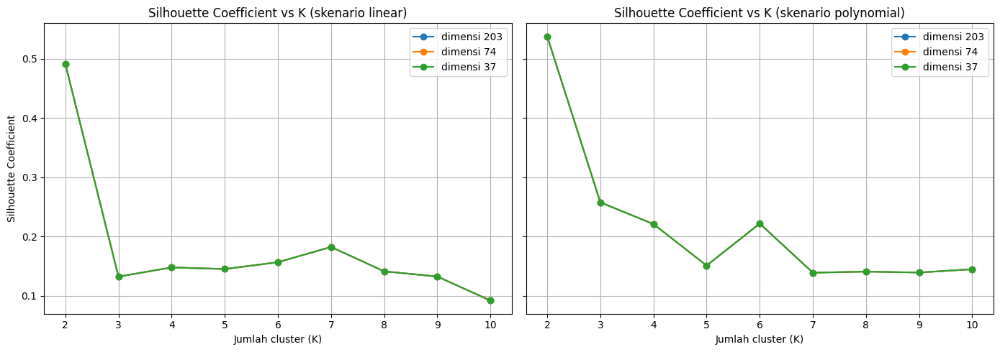
Heatmap Silhouette Coefficient (K × dimensi)
import matplotlib.pyplot as plt
import seaborn as sns
# 2) Heatmap K x dimensi, per skenario
fig, axes = plt.subplots(1, len(SKENARIO), figsize=(14, 5))
for ax, sk in zip(axes, SKENARIO):
tabel = hasil_eksperimen[hasil_eksperimen["skenario"] == sk].pivot(index="K", columns="dimensi_target", values="silhouette")
sns.heatmap(tabel, annot=True, fmt=".3f", cmap="YlGnBu", ax=ax)
ax.set_title(f"Silhouette Coefficient (skenario {sk})")
ax.set_xlabel("Dimensi")
plt.tight_layout()
plt.show()
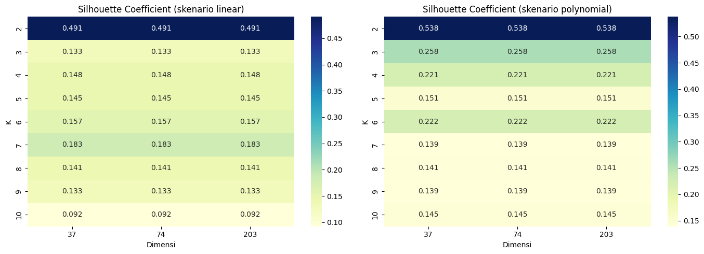
Penjelasan kode di atas adalah sebagai berikut.
Grafik garis menunjukkan Silhouette terhadap K pada tiap dimensi, dan heatmap merangkumnya dalam matriks K × dimensi.
Garis dimensi 74 dan 37 berimpit bila dimensi efektifnya sama (lihat bagian 3).
Interpretasi hasil eksperimen.
Pada seluruh kombinasi skenario dan dimensi, K = 2 menghasilkan Silhouette Coefficient tertinggi: 0,4909 untuk interpolasi linier dan 0,5375 untuk polynomial. Menurut skala Kaufman dan Rousseeuw, struktur cluster linier tergolong lemah, sedangkan polynomial tergolong wajar.
Skor identik pada dimensi 203, 74, dan 37. Penyebabnya, data hanya berisi 37 kecamatan sehingga ruang fitur yang benar-benar terpakai paling banyak 36 dimensi. PCA dengan 37 komponen hanya memutar sumbu tanpa mengubah jarak antar titik (variansi terjelaskan 100%), sehingga reduksi dimensi tidak mengubah hasil clustering.
Ukuran cluster hasil terbaik adalah [34, 3] (linier) dan [35, 2] (polynomial). Cluster kecil berisi kecamatan yang pola polutannya berbeda jauh dari kelompok besar, sehingga skor silhouette lebih mencerminkan pemisahan kelompok kecil tersebut daripada dua segmen wilayah yang seimbang.
5. Analisis Jumlah Cluster pada PCA 37 Komponen dan 68 Fitur per Polutan#
Bagian ini menjawab tiga pertanyaan: (1) berapa jumlah cluster (K) terbaik, (2) bagaimana kualitas cluster bila jumlah komponen PCA divariasikan dari 1 sampai 37, dan (3) seberapa baik data terkelompok. Prosedur yang sama dijalankan pada dua jenis data:
Data gabungan tiga polutan (NO2, SO2, CO), yaitu fitur hasil praproses pada bagian 2.
68 fitur per polutan, yaitu fitur TSFEL milik NO2, SO2, dan CO dianalisis sendiri-sendiri (jumlahnya kurang dari 68 bila ada kolom konstan yang dibuang).
Langkah untuk setiap data: (a) standardisasi, (b) reduksi PCA menjadi 37 komponen, yaitu jumlah maksimum yang mungkin karena hanya ada 37 kecamatan, (c) K-Means untuk K = 2 sampai 10 dengan Elbow Method (inertia) dan Silhouette Coefficient, (d) penyapuan jumlah komponen PCA dari 1 sampai 37, dan (e) pembandingan dengan data tanpa PCA.
from sklearn.preprocessing import StandardScaler
from sklearn.decomposition import PCA
from sklearn.cluster import KMeans
from sklearn.metrics import silhouette_score
K_RANGE_AN = list(range(2, 11))
N_KOMP_MAX = 37
POLUTAN = ["no2", "so2", "co"]
NAMA_DATA = ["gabungan"] + POLUTAN
def kategori_silhouette(s):
"""Skala Kaufman dan Rousseeuw (1990)."""
if s > 0.70: return "kuat"
if s > 0.50: return "wajar"
if s > 0.25: return "lemah"
return "tidak berstruktur"
def evaluasi_k(Z):
"""K-Means untuk K = 2..10; mengembalikan inertia, silhouette, dan ukuran cluster tiap K."""
baris = []
for k in K_RANGE_AN:
if k >= Z.shape[0]:
continue
km = KMeans(n_clusters=k, random_state=42, n_init=10)
lab = km.fit_predict(Z)
if len(set(lab)) < 2:
continue
ukuran = np.bincount(lab)
baris.append({"K": k, "inertia": km.inertia_, "silhouette": silhouette_score(Z, lab),
"min_anggota": int(ukuran.min()), "ukuran_cluster": ukuran.tolist()})
return pd.DataFrame(baris)
def sapu_pca(Xs):
"""Untuk tiap jumlah komponen PCA 1..37, catat K dan silhouette terbaik."""
baris = []
for n in range(1, min(N_KOMP_MAX, Xs.shape[0], Xs.shape[1]) + 1):
Z = PCA(n_components=n, random_state=42).fit_transform(Xs)
e = evaluasi_k(Z)
t = e.loc[e["silhouette"].idxmax()]
baris.append({"n_komponen": n, "K_terbaik": int(t["K"]), "silhouette_terbaik": float(t["silhouette"])})
return pd.DataFrame(baris)
def matriks_data(nama, sk):
"""Matriks fitur terstandardisasi: data gabungan, atau fitur milik satu polutan."""
if nama == "gabungan":
return X_scaled[sk]
kolom = [c for c in X_fitur[sk].columns if c.startswith(f"{nama}_")]
return StandardScaler().fit_transform(X_fitur[sk][kolom].values)
def analisis_data(Xs):
n_komp = min(N_KOMP_MAX, Xs.shape[0], Xs.shape[1])
Z37 = PCA(n_components=n_komp, random_state=42).fit_transform(Xs)
return {"n_fitur": Xs.shape[1], "n_komp": n_komp, "eval_pca": evaluasi_k(Z37),
"eval_tanpa_pca": evaluasi_k(Xs), "sapuan": sapu_pca(Xs)}
# Perhitungan seluruh data x skenario (proses sekitar 1-2 menit; tidak menampilkan keluaran)
hasil_analisis = {}
for nama in NAMA_DATA:
for sk in SKENARIO:
hasil_analisis[(nama, sk)] = analisis_data(matriks_data(nama, sk))
print(f"Analisis selesai: {len(hasil_analisis)} kombinasi data x skenario.")
Analisis selesai: 8 kombinasi data x skenario.
def tabel_evaluasi(nama, sk):
e = hasil_analisis[(nama, sk)]["eval_pca"].copy()
e["terbaik"] = np.where(e["silhouette"] == e["silhouette"].max(), "<-- K terbaik", "")
e["inertia"] = e["inertia"].round(2)
e["silhouette"] = e["silhouette"].round(4)
print(f"{nama.upper()} | interpolasi {sk} | {hasil_analisis[(nama, sk)]['n_fitur']} fitur -> PCA {hasil_analisis[(nama, sk)]['n_komp']} komponen")
display(e)
def plot_evaluasi(nama_list, sk, judul):
fig, axes = plt.subplots(1, 2, figsize=(13, 4.6))
for nama in nama_list:
e = hasil_analisis[(nama, sk)]["eval_pca"]
axes[0].plot(e["K"], e["inertia"], marker="o", linestyle="--", label=nama.upper())
axes[1].plot(e["K"], e["silhouette"], marker="o", label=nama.upper())
if len(nama_list) == 1:
kb = int(e.loc[e["silhouette"].idxmax(), "K"])
axes[1].axvline(kb, color="red", linestyle=":", label=f"K terbaik = {kb}")
axes[0].set_title("Elbow Method (inertia)")
axes[0].set_ylabel("Inertia")
axes[1].set_title("Silhouette Coefficient")
axes[1].set_ylabel("Silhouette Coefficient")
if len(nama_list) > 1:
axes[0].set_yscale("log")
for ax in axes:
ax.set_xlabel("Jumlah cluster (K)")
ax.grid(True, alpha=0.3)
ax.legend()
plt.suptitle(judul, fontsize=12)
plt.tight_layout()
plt.show()
def plot_sapuan(nama_list, sk, judul):
fig, ax = plt.subplots(figsize=(11, 4.6))
for nama in nama_list:
s = hasil_analisis[(nama, sk)]["sapuan"]
ax.plot(s["n_komponen"], s["silhouette_terbaik"], marker=".", label=nama.upper())
ax.set_title(judul)
ax.set_xlabel("Jumlah komponen PCA")
ax.set_ylabel("Silhouette Coefficient terbaik (K = 2..10)")
ax.grid(True, alpha=0.3)
ax.legend()
plt.tight_layout()
plt.show()
def tabel_sapuan(nama_list, sk, titik=(1, 2, 3, 5, 10, 15, 20, 25, 30, 37)):
gabung = None
for nama in nama_list:
s = hasil_analisis[(nama, sk)]["sapuan"]
s = s[s["n_komponen"].isin(titik)].set_index("n_komponen")
s = s.rename(columns={"K_terbaik": f"K_{nama}", "silhouette_terbaik": f"sil_{nama}"})
s[f"sil_{nama}"] = s[f"sil_{nama}"].round(4)
gabung = s if gabung is None else gabung.join(s)
display(gabung)
5.1 Data Gabungan (3 Polutan): PCA 37 Komponen#
Evaluasi K - interpolasi linier
tabel_evaluasi("gabungan", "linear")
GABUNGAN | interpolasi linear | 198 fitur -> PCA 37 komponen
| K | inertia | silhouette | min_anggota | ukuran_cluster | terbaik | |
|---|---|---|---|---|---|---|
| 0 | 2 | 5442.27 | 0.4909 | 3 | [34, 3] | <-- K terbaik |
| 1 | 3 | 4835.84 | 0.1326 | 1 | [20, 1, 16] | |
| 2 | 4 | 3726.48 | 0.1481 | 1 | [3, 18, 15, 1] | |
| 3 | 5 | 3454.30 | 0.1454 | 1 | [13, 21, 1, 1, 1] | |
| 4 | 6 | 2898.60 | 0.1568 | 1 | [13, 20, 1, 1, 1, 1] | |
| 5 | 7 | 2498.57 | 0.1826 | 1 | [22, 4, 1, 1, 7, 1, 1] | |
| 6 | 8 | 2148.52 | 0.1415 | 1 | [2, 10, 1, 18, 3, 1, 1, 1] | |
| 7 | 9 | 1907.21 | 0.1327 | 1 | [14, 1, 1, 1, 3, 1, 13, 2, 1] | |
| 8 | 10 | 1728.20 | 0.0923 | 1 | [1, 12, 1, 6, 1, 9, 1, 3, 1, 2] |
plot_evaluasi(["gabungan"], "linear", "Data gabungan - interpolasi linear (PCA 37 komponen)")
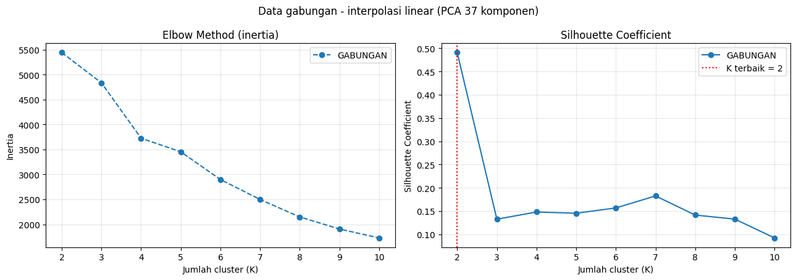
Evaluasi K - interpolasi polynomial
tabel_evaluasi("gabungan", "polynomial")
GABUNGAN | interpolasi polynomial | 199 fitur -> PCA 37 komponen
| K | inertia | silhouette | min_anggota | ukuran_cluster | terbaik | |
|---|---|---|---|---|---|---|
| 0 | 2 | 5450.82 | 0.5375 | 2 | [35, 2] | <-- K terbaik |
| 1 | 3 | 4392.71 | 0.2578 | 2 | [2, 9, 26] | |
| 2 | 4 | 3603.16 | 0.2212 | 1 | [2, 25, 9, 1] | |
| 3 | 5 | 3252.07 | 0.1512 | 1 | [18, 2, 1, 8, 8] | |
| 4 | 6 | 2749.89 | 0.2220 | 1 | [9, 23, 1, 1, 1, 2] | |
| 5 | 7 | 2384.97 | 0.1392 | 1 | [9, 1, 9, 1, 14, 1, 2] | |
| 6 | 8 | 2091.99 | 0.1411 | 1 | [6, 9, 17, 1, 1, 1, 1, 1] | |
| 7 | 9 | 1822.79 | 0.1395 | 1 | [14, 1, 1, 1, 4, 11, 1, 2, 2] | |
| 8 | 10 | 1680.97 | 0.1451 | 1 | [3, 14, 1, 1, 1, 1, 8, 6, 1, 1] |
plot_evaluasi(["gabungan"], "polynomial", "Data gabungan - interpolasi polynomial (PCA 37 komponen)")
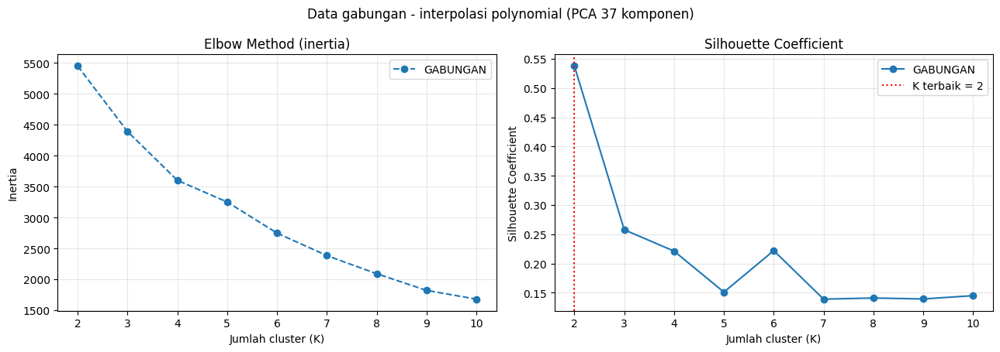
5.2 Kualitas Cluster pada PCA 1 sampai 37 Komponen (Data Gabungan)#
Interpolasi linier
plot_sapuan(["gabungan"], "linear", "Silhouette terbaik vs jumlah komponen PCA - data gabungan, interpolasi linear")
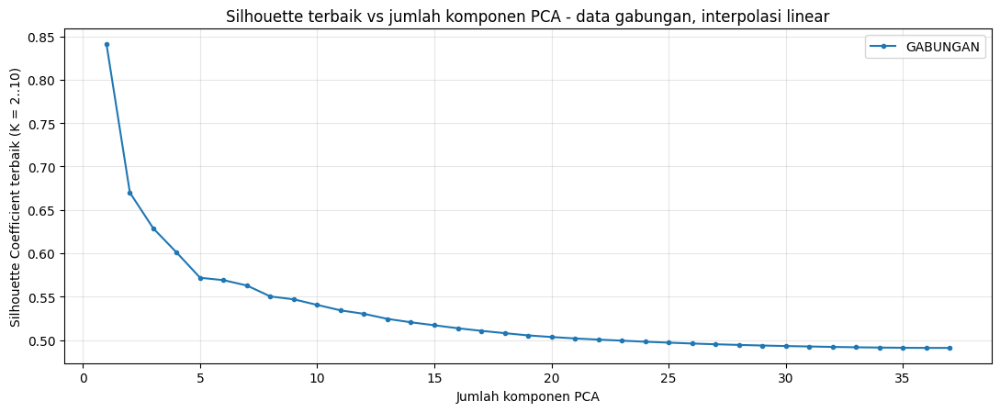
tabel_sapuan(["gabungan"], "linear")
| K_gabungan | sil_gabungan | |
|---|---|---|
| n_komponen | ||
| 1 | 2 | 0.8412 |
| 2 | 2 | 0.6698 |
| 3 | 3 | 0.6286 |
| 5 | 2 | 0.5717 |
| 10 | 2 | 0.5404 |
| 15 | 2 | 0.5170 |
| 20 | 2 | 0.5034 |
| 25 | 2 | 0.4969 |
| 30 | 2 | 0.4930 |
| 37 | 2 | 0.4909 |
Interpolasi polynomial
plot_sapuan(["gabungan"], "polynomial", "Silhouette terbaik vs jumlah komponen PCA - data gabungan, interpolasi polynomial")
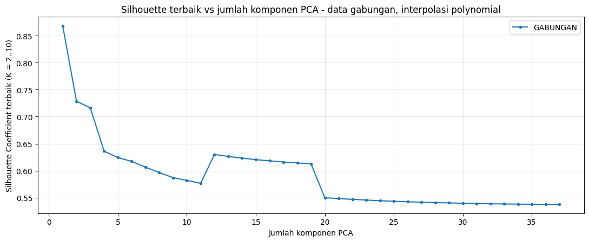
tabel_sapuan(["gabungan"], "polynomial")
| K_gabungan | sil_gabungan | |
|---|---|---|
| n_komponen | ||
| 1 | 2 | 0.8683 |
| 2 | 2 | 0.7286 |
| 3 | 2 | 0.7163 |
| 5 | 2 | 0.6242 |
| 10 | 2 | 0.5820 |
| 15 | 2 | 0.6204 |
| 20 | 2 | 0.5499 |
| 25 | 2 | 0.5433 |
| 30 | 2 | 0.5396 |
| 37 | 2 | 0.5375 |
5.3 Analisis pada 68 Fitur per Polutan (Prosedur yang Sama)#
Evaluasi K (PCA 37 komponen) - interpolasi linier
plot_evaluasi(POLUTAN, "linear", "68 fitur per polutan - interpolasi linear (PCA 37 komponen)")
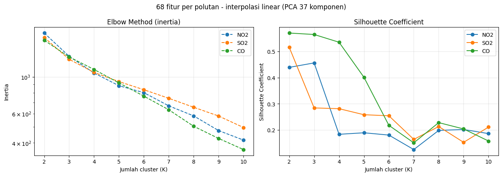
Evaluasi K (PCA 37 komponen) - interpolasi polynomial
plot_evaluasi(POLUTAN, "polynomial", "68 fitur per polutan - interpolasi polynomial (PCA 37 komponen)")
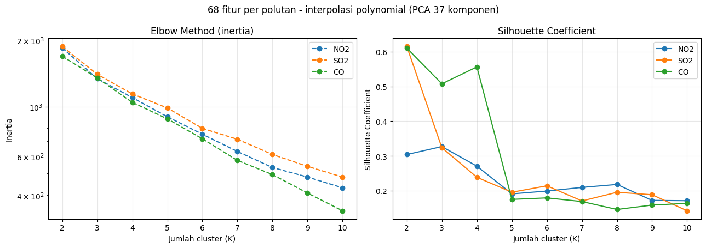
Tabel evaluasi K - NO2, interpolasi linier
tabel_evaluasi("no2", "linear")
NO2 | interpolasi linear | 66 fitur -> PCA 37 komponen
| K | inertia | silhouette | min_anggota | ukuran_cluster | terbaik | |
|---|---|---|---|---|---|---|
| 0 | 2 | 1835.33 | 0.4391 | 4 | [33, 4] | |
| 1 | 3 | 1329.24 | 0.4562 | 1 | [4, 32, 1] | <-- K terbaik |
| 2 | 4 | 1054.37 | 0.1833 | 1 | [18, 4, 1, 14] | |
| 3 | 5 | 883.76 | 0.1891 | 1 | [3, 18, 1, 1, 14] | |
| 4 | 6 | 802.32 | 0.1803 | 1 | [18, 2, 1, 14, 1, 1] | |
| 5 | 7 | 668.09 | 0.1250 | 1 | [11, 7, 1, 13, 2, 1, 2] | |
| 6 | 8 | 581.22 | 0.1982 | 1 | [2, 8, 16, 1, 1, 1, 6, 2] | |
| 7 | 9 | 474.10 | 0.2017 | 1 | [2, 17, 1, 1, 1, 5, 1, 7, 2] | |
| 8 | 10 | 415.45 | 0.1860 | 1 | [1, 16, 2, 1, 5, 1, 1, 1, 7, 2] |
Tabel evaluasi K - NO2, interpolasi polynomial
tabel_evaluasi("no2", "polynomial")
NO2 | interpolasi polynomial | 66 fitur -> PCA 37 komponen
| K | inertia | silhouette | min_anggota | ukuran_cluster | terbaik | |
|---|---|---|---|---|---|---|
| 0 | 2 | 1838.82 | 0.3045 | 8 | [8, 29] | |
| 1 | 3 | 1336.28 | 0.3273 | 1 | [8, 28, 1] | <-- K terbaik |
| 2 | 4 | 1098.69 | 0.2710 | 1 | [26, 9, 1, 1] | |
| 3 | 5 | 901.08 | 0.1912 | 1 | [7, 15, 1, 1, 13] | |
| 4 | 6 | 751.72 | 0.1993 | 1 | [8, 15, 1, 2, 1, 10] | |
| 5 | 7 | 628.91 | 0.2098 | 1 | [2, 15, 10, 1, 1, 6, 2] | |
| 6 | 8 | 532.57 | 0.2183 | 1 | [1, 8, 11, 2, 1, 11, 1, 2] | |
| 7 | 9 | 482.63 | 0.1725 | 1 | [1, 11, 1, 2, 11, 5, 3, 2, 1] | |
| 8 | 10 | 431.36 | 0.1716 | 1 | [4, 7, 2, 13, 2, 1, 1, 1, 1, 5] |
Tabel evaluasi K - SO2, interpolasi linier
tabel_evaluasi("so2", "linear")
SO2 | interpolasi linear | 67 fitur -> PCA 37 komponen
| K | inertia | silhouette | min_anggota | ukuran_cluster | terbaik | |
|---|---|---|---|---|---|---|
| 0 | 2 | 1725.58 | 0.5159 | 3 | [34, 3] | <-- K terbaik |
| 1 | 3 | 1275.89 | 0.2841 | 3 | [13, 21, 3] | |
| 2 | 4 | 1062.32 | 0.2812 | 1 | [12, 21, 1, 3] | |
| 3 | 5 | 935.53 | 0.2581 | 1 | [11, 21, 1, 3, 1] | |
| 4 | 6 | 835.81 | 0.2541 | 1 | [2, 10, 20, 3, 1, 1] | |
| 5 | 7 | 742.09 | 0.1639 | 1 | [11, 1, 15, 1, 1, 6, 2] | |
| 6 | 8 | 655.14 | 0.2130 | 1 | [8, 1, 16, 1, 1, 1, 6, 3] | |
| 7 | 9 | 580.20 | 0.1526 | 1 | [11, 1, 1, 10, 5, 1, 6, 1, 1] | |
| 8 | 10 | 494.67 | 0.2110 | 1 | [1, 5, 16, 1, 1, 8, 1, 1, 1, 2] |
Tabel evaluasi K - SO2, interpolasi polynomial
tabel_evaluasi("so2", "polynomial")
SO2 | interpolasi polynomial | 67 fitur -> PCA 37 komponen
| K | inertia | silhouette | min_anggota | ukuran_cluster | terbaik | |
|---|---|---|---|---|---|---|
| 0 | 2 | 1864.76 | 0.6148 | 1 | [36, 1] | <-- K terbaik |
| 1 | 3 | 1398.22 | 0.3240 | 2 | [2, 7, 28] | |
| 2 | 4 | 1141.21 | 0.2390 | 1 | [2, 23, 11, 1] | |
| 3 | 5 | 986.55 | 0.1960 | 1 | [20, 1, 8, 7, 1] | |
| 4 | 6 | 798.77 | 0.2144 | 1 | [19, 11, 1, 3, 2, 1] | |
| 5 | 7 | 713.49 | 0.1709 | 1 | [6, 1, 8, 4, 14, 1, 3] | |
| 6 | 8 | 609.46 | 0.1958 | 1 | [1, 4, 1, 8, 4, 1, 15, 3] | |
| 7 | 9 | 538.85 | 0.1888 | 1 | [13, 5, 2, 1, 11, 1, 2, 1, 1] | |
| 8 | 10 | 482.58 | 0.1428 | 1 | [7, 1, 2, 1, 8, 3, 9, 1, 4, 1] |
Tabel evaluasi K - CO, interpolasi linier
tabel_evaluasi("co", "linear")
CO | interpolasi linear | 65 fitur -> PCA 37 komponen
| K | inertia | silhouette | min_anggota | ukuran_cluster | terbaik | |
|---|---|---|---|---|---|---|
| 0 | 2 | 1660.69 | 0.5704 | 3 | [34, 3] | <-- K terbaik |
| 1 | 3 | 1317.28 | 0.5648 | 1 | [33, 3, 1] | |
| 2 | 4 | 1107.45 | 0.5352 | 1 | [33, 2, 1, 1] | |
| 3 | 5 | 918.63 | 0.4012 | 1 | [31, 2, 1, 1, 2] | |
| 4 | 6 | 764.72 | 0.2176 | 1 | [24, 2, 1, 1, 7, 2] | |
| 5 | 7 | 632.75 | 0.1507 | 1 | [1, 17, 1, 1, 2, 14, 1] | |
| 6 | 8 | 503.19 | 0.2280 | 1 | [9, 1, 20, 2, 1, 2, 1, 1] | |
| 7 | 9 | 425.12 | 0.2038 | 1 | [8, 1, 1, 2, 2, 1, 19, 1, 2] | |
| 8 | 10 | 364.29 | 0.1577 | 1 | [16, 1, 1, 1, 2, 1, 11, 2, 1, 1] |
Tabel evaluasi K - CO, interpolasi polynomial
tabel_evaluasi("co", "polynomial")
CO | interpolasi polynomial | 66 fitur -> PCA 37 komponen
| K | inertia | silhouette | min_anggota | ukuran_cluster | terbaik | |
|---|---|---|---|---|---|---|
| 0 | 2 | 1687.45 | 0.6103 | 2 | [2, 35] | <-- K terbaik |
| 1 | 3 | 1345.17 | 0.5076 | 2 | [3, 2, 32] | |
| 2 | 4 | 1045.72 | 0.5562 | 1 | [1, 2, 1, 33] | |
| 3 | 5 | 881.31 | 0.1754 | 1 | [22, 11, 1, 2, 1] | |
| 4 | 6 | 717.20 | 0.1797 | 1 | [21, 1, 1, 2, 10, 2] | |
| 5 | 7 | 573.14 | 0.1692 | 1 | [10, 1, 21, 1, 1, 1, 2] | |
| 6 | 8 | 495.08 | 0.1464 | 1 | [9, 1, 1, 10, 2, 1, 12, 1] | |
| 7 | 9 | 408.58 | 0.1590 | 1 | [9, 1, 1, 10, 1, 1, 2, 11, 1] | |
| 8 | 10 | 340.17 | 0.1640 | 1 | [9, 1, 1, 1, 9, 1, 1, 2, 9, 3] |
PCA 1 sampai 37 komponen - interpolasi linier
plot_sapuan(POLUTAN, "linear", "Silhouette terbaik vs jumlah komponen PCA - 68 fitur per polutan, interpolasi linear")
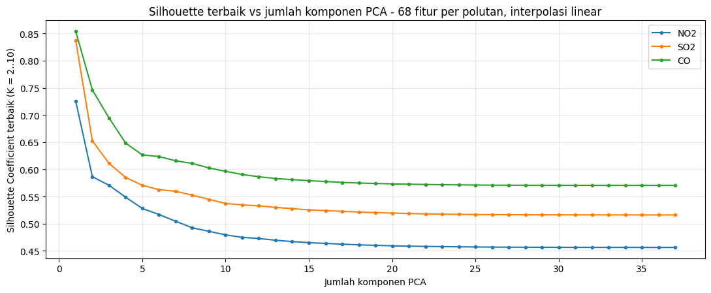
tabel_sapuan(POLUTAN, "linear")
| K_no2 | sil_no2 | K_so2 | sil_so2 | K_co | sil_co | |
|---|---|---|---|---|---|---|
| n_komponen | ||||||
| 1 | 2 | 0.7258 | 2 | 0.8372 | 2 | 0.8541 |
| 2 | 3 | 0.5864 | 2 | 0.6523 | 3 | 0.7462 |
| 3 | 3 | 0.5706 | 2 | 0.6110 | 3 | 0.6946 |
| 5 | 3 | 0.5279 | 2 | 0.5706 | 3 | 0.6265 |
| 10 | 3 | 0.4792 | 2 | 0.5371 | 2 | 0.5963 |
| 15 | 3 | 0.4649 | 2 | 0.5254 | 2 | 0.5791 |
| 20 | 3 | 0.4591 | 2 | 0.5194 | 2 | 0.5732 |
| 25 | 3 | 0.4570 | 2 | 0.5168 | 2 | 0.5711 |
| 30 | 3 | 0.4563 | 2 | 0.5161 | 2 | 0.5705 |
| 37 | 3 | 0.4562 | 2 | 0.5159 | 2 | 0.5704 |
PCA 1 sampai 37 komponen - interpolasi polynomial
plot_sapuan(POLUTAN, "polynomial", "Silhouette terbaik vs jumlah komponen PCA - 68 fitur per polutan, interpolasi polynomial")
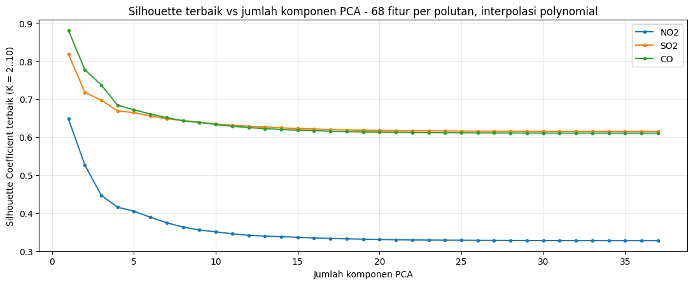
tabel_sapuan(POLUTAN, "polynomial")
| K_no2 | sil_no2 | K_so2 | sil_so2 | K_co | sil_co | |
|---|---|---|---|---|---|---|
| n_komponen | ||||||
| 1 | 3 | 0.6474 | 2 | 0.8178 | 2 | 0.8803 |
| 2 | 3 | 0.5264 | 2 | 0.7173 | 2 | 0.7770 |
| 3 | 3 | 0.4468 | 2 | 0.6971 | 2 | 0.7371 |
| 5 | 3 | 0.4048 | 2 | 0.6641 | 2 | 0.6717 |
| 10 | 3 | 0.3507 | 2 | 0.6343 | 2 | 0.6330 |
| 15 | 3 | 0.3361 | 2 | 0.6224 | 2 | 0.6182 |
| 20 | 3 | 0.3305 | 2 | 0.6173 | 2 | 0.6127 |
| 25 | 3 | 0.3284 | 2 | 0.6155 | 2 | 0.6110 |
| 30 | 3 | 0.3276 | 2 | 0.6149 | 2 | 0.6104 |
| 37 | 3 | 0.3273 | 2 | 0.6148 | 2 | 0.6103 |
5.4 Penilaian Seberapa Baik Data Terkelompok#
baris = []
for (nama, sk), h in hasil_analisis.items():
e, et, sp = h["eval_pca"], h["eval_tanpa_pca"], h["sapuan"]
b = e.loc[e["silhouette"].idxmax()]
bt = et.loc[et["silhouette"].idxmax()]
bs = sp.loc[sp["silhouette_terbaik"].idxmax()]
baris.append({"data": nama, "skenario": sk, "n_fitur": h["n_fitur"], "K_terbaik": int(b["K"]),
"silhouette_pca37": round(float(b["silhouette"]), 4), "kategori": kategori_silhouette(b["silhouette"]),
"ukuran_cluster": b["ukuran_cluster"], "min_anggota": int(b["min_anggota"]),
"silhouette_tanpa_pca": round(float(bt["silhouette"]), 4),
"pca37_sama_tanpa_pca": bool(int(bt["K"]) == int(b["K"]) and abs(bt["silhouette"] - b["silhouette"]) < 1e-6),
"sapuan_tertinggi_pada": int(bs["n_komponen"]), "sapuan_silhouette": round(float(bs["silhouette_terbaik"]), 4)})
penilaian = pd.DataFrame(baris)
display(penilaian)
| data | skenario | n_fitur | K_terbaik | silhouette_pca37 | kategori | ukuran_cluster | min_anggota | silhouette_tanpa_pca | pca37_sama_tanpa_pca | sapuan_tertinggi_pada | sapuan_silhouette | |
|---|---|---|---|---|---|---|---|---|---|---|---|---|
| 0 | gabungan | linear | 198 | 2 | 0.4909 | lemah | [34, 3] | 3 | 0.4909 | True | 1 | 0.8412 |
| 1 | gabungan | polynomial | 199 | 2 | 0.5375 | wajar | [35, 2] | 2 | 0.5375 | True | 1 | 0.8683 |
| 2 | no2 | linear | 66 | 3 | 0.4562 | lemah | [4, 32, 1] | 1 | 0.4562 | True | 1 | 0.7258 |
| 3 | no2 | polynomial | 66 | 3 | 0.3273 | lemah | [8, 28, 1] | 1 | 0.3273 | True | 1 | 0.6474 |
| 4 | so2 | linear | 67 | 2 | 0.5159 | wajar | [34, 3] | 3 | 0.5159 | True | 1 | 0.8372 |
| 5 | so2 | polynomial | 67 | 2 | 0.6148 | wajar | [36, 1] | 1 | 0.6148 | True | 1 | 0.8178 |
| 6 | co | linear | 65 | 2 | 0.5704 | wajar | [34, 3] | 3 | 0.5704 | True | 1 | 0.8541 |
| 7 | co | polynomial | 66 | 2 | 0.6103 | wajar | [2, 35] | 2 | 0.6103 | True | 1 | 0.8803 |
print("RINGKASAN ANALISIS JUMLAH CLUSTER")
print("=" * 70)
for _, r in penilaian.iterrows():
print(f"- {r['data'].upper():9s} | {r['skenario']:10s} | K terbaik = {r['K_terbaik']} | silhouette = {r['silhouette_pca37']:.4f} ({r['kategori']}) | ukuran cluster = {r['ukuran_cluster']}")
if penilaian["pca37_sama_tanpa_pca"].all():
print("\nPCA 37 komponen menghasilkan K dan silhouette yang sama dengan data tanpa PCA pada seluruh data. "
f"Hal ini wajar karena jumlah sampel ({N_SAMPEL}) membuat PCA 37 komponen hanya merotasi ruang fitur tanpa mengubah jarak antar titik.")
else:
beda = penilaian[~penilaian["pca37_sama_tanpa_pca"]][["data", "skenario"]].values.tolist()
print("\nPCA 37 komponen berbeda dari data tanpa PCA pada:", beda)
kecil = penilaian[penilaian["min_anggota"] <= 2]
if len(kecil):
print("\nCatatan: solusi terbaik berikut memuat cluster dengan 2 anggota atau kurang, sehingga skor tinggi kemungkinan berasal dari outlier:")
print(kecil[["data", "skenario", "K_terbaik", "ukuran_cluster"]].to_string(index=False))
tertinggi = penilaian.loc[penilaian["silhouette_pca37"].idxmax()]
print(f"\nSilhouette tertinggi: data {tertinggi['data'].upper()}, interpolasi {tertinggi['skenario']}, "
f"K = {tertinggi['K_terbaik']}, silhouette = {tertinggi['silhouette_pca37']:.4f} ({tertinggi['kategori']}).")
RINGKASAN ANALISIS JUMLAH CLUSTER
======================================================================
- GABUNGAN | linear | K terbaik = 2 | silhouette = 0.4909 (lemah) | ukuran cluster = [34, 3]
- GABUNGAN | polynomial | K terbaik = 2 | silhouette = 0.5375 (wajar) | ukuran cluster = [35, 2]
- NO2 | linear | K terbaik = 3 | silhouette = 0.4562 (lemah) | ukuran cluster = [4, 32, 1]
- NO2 | polynomial | K terbaik = 3 | silhouette = 0.3273 (lemah) | ukuran cluster = [8, 28, 1]
- SO2 | linear | K terbaik = 2 | silhouette = 0.5159 (wajar) | ukuran cluster = [34, 3]
- SO2 | polynomial | K terbaik = 2 | silhouette = 0.6148 (wajar) | ukuran cluster = [36, 1]
- CO | linear | K terbaik = 2 | silhouette = 0.5704 (wajar) | ukuran cluster = [34, 3]
- CO | polynomial | K terbaik = 2 | silhouette = 0.6103 (wajar) | ukuran cluster = [2, 35]
PCA 37 komponen menghasilkan K dan silhouette yang sama dengan data tanpa PCA pada seluruh data. Hal ini wajar karena jumlah sampel (37) membuat PCA 37 komponen hanya merotasi ruang fitur tanpa mengubah jarak antar titik.
Catatan: solusi terbaik berikut memuat cluster dengan 2 anggota atau kurang, sehingga skor tinggi kemungkinan berasal dari outlier:
data skenario K_terbaik ukuran_cluster
gabungan polynomial 2 [35, 2]
no2 linear 3 [4, 32, 1]
no2 polynomial 3 [8, 28, 1]
so2 polynomial 2 [36, 1]
co polynomial 2 [2, 35]
Silhouette tertinggi: data SO2, interpolasi polynomial, K = 2, silhouette = 0.6148 (wajar).
Cara membaca hasil.
Jumlah cluster terbaik adalah K dengan Silhouette Coefficient tertinggi. Elbow Method dipakai sebagai pembanding visual, yaitu titik tempat penurunan inertia mulai melandai.
Kualitas cluster (seberapa baik data terkelompok) dinilai dari nilai silhouette: di atas 0,70 kuat, 0,51 sampai 0,70 wajar, 0,26 sampai 0,50 lemah, dan di bawah 0,25 tidak berstruktur.
Penyapuan PCA 1 sampai 37. Skor tertinggi pada jumlah komponen yang sangat sedikit tidak otomatis berarti cluster lebih baik, karena pemampatan ke ruang berdimensi rendah membuat titik tampak lebih terpisah sambil membuang sebagian besar variasi asli. Hasil pada 37 komponen lebih representatif karena seluruh informasi masih terpertahankan.
Cluster beranggota sangat sedikit. Silhouette tinggi dengan cluster berisi satu atau dua kecamatan umumnya menunjukkan outlier yang terpisah sendiri, bukan dua kelompok yang seimbang.
6. Hasil Clustering pada Tiap Dimensi#
Setiap tingkat dimensi (203, 74, 37) diberi label cluster memakai K terbaiknya. Tabel label per kecamatan disimpan ke hasil_clustering_<skenario>.csv, dan Silhouette per cluster dihitung untuk kombinasi terbaik tiap skenario.
hasil_label = {}
for sk in SKENARIO:
tabel = ident[sk].copy()
for target in DIMENSI_TARGET:
cocok = terbaik_kombinasi[(terbaik_kombinasi["skenario"] == sk) & (terbaik_kombinasi["dimensi_target"] == target)]
if cocok.empty:
print(f"[{sk}] dimensi {target}: tidak ada solusi yang memenuhi MIN_ANGGOTA = {MIN_ANGGOTA}, dilewati.")
continue
baris_terbaik = cocok.iloc[0]
k = int(baris_terbaik["K"])
tabel[f"cluster_dim{target}"] = label_store[(sk, target, k)]
print(f"[{sk}] dimensi {target} (efektif {int(baris_terbaik['dimensi_efektif'])}): K = {k}, silhouette = {baris_terbaik['silhouette']:.4f}")
hasil_label[sk] = tabel
tabel.to_csv(f"hasil_clustering_{sk}.csv", index=False)
print(f"Tabel label disimpan: hasil_clustering_{sk}.csv\n")
[linear] dimensi 203 (efektif 198): K = 2, silhouette = 0.4909
[linear] dimensi 74 (efektif 37): K = 2, silhouette = 0.4909
[linear] dimensi 37 (efektif 37): K = 2, silhouette = 0.4909
Tabel label disimpan: hasil_clustering_linear.csv
[polynomial] dimensi 203 (efektif 199): K = 2, silhouette = 0.5375
[polynomial] dimensi 74 (efektif 37): K = 2, silhouette = 0.5375
[polynomial] dimensi 37 (efektif 37): K = 2, silhouette = 0.5375
Tabel label disimpan: hasil_clustering_polynomial.csv
Label cluster per kecamatan - interpolasi linier
display(hasil_label["linear"].head(10))
| id | nama | daerah | cluster_dim203 | cluster_dim74 | cluster_dim37 | |
|---|---|---|---|---|---|---|
| 0 | 1 | Muhammad Ali Murtadho | Baron Nganjuk | 0 | 0 | 0 |
| 1 | 2 | Ainur Raftuzzaki | Nunukan | 0 | 0 | 0 |
| 2 | 4 | M. Hendrik Purwanto | Sreseh, Sampang | 0 | 0 | 0 |
| 3 | 6 | Okan Syailendra wahyudi | Manyar, Gresik | 0 | 0 | 0 |
| 4 | 10 | Muhammad Zaidan Nabil Rafi | Kamal, Bangkalan | 0 | 0 | 0 |
| 5 | 11 | Triswanti Jannatul Ma'wa | Kedungpring Lamongan | 0 | 0 | 0 |
| 6 | 12 | Ahmad Syahrul Farihin | Gresik Kota, Gresik | 0 | 0 | 0 |
| 7 | 13 | Rian Renaldy | Waru, Pamekasan | 0 | 0 | 0 |
| 8 | 14 | Ahmad Dafi Zidni Alfarisi | Paciran, Lamongan | 0 | 0 | 0 |
| 9 | 15 | AHMAD MAULANA ISHAQ | Kertosono, Nganjuk | 0 | 0 | 0 |
Label cluster per kecamatan - interpolasi polynomial
display(hasil_label["polynomial"].head(10))
| id | nama | daerah | cluster_dim203 | cluster_dim74 | cluster_dim37 | |
|---|---|---|---|---|---|---|
| 0 | 1 | Muhammad Ali Murtadho | Baron Nganjuk | 0 | 0 | 0 |
| 1 | 2 | Ainur Raftuzzaki | Nunukan | 0 | 0 | 0 |
| 2 | 4 | M. Hendrik Purwanto | Sreseh, Sampang | 0 | 0 | 0 |
| 3 | 6 | Okan Syailendra wahyudi | Manyar, Gresik | 0 | 0 | 0 |
| 4 | 9 | Muhammad Zaidan Nabil Rafi | Kamal, Bangkalan | 0 | 0 | 0 |
| 5 | 10 | Triswanti Jannatul Ma'wa | Kedungpring Lamongan | 0 | 0 | 0 |
| 6 | 11 | Ahmad Syahrul Farihin | Gresik Kota, Gresik | 0 | 0 | 0 |
| 7 | 12 | Rian Renaldy | Waru, Pamekasan | 0 | 0 | 0 |
| 8 | 13 | Ahmad Dafi Zidni Alfarisi | Paciran, Lamongan | 0 | 0 | 0 |
| 9 | 14 | AHMAD MAULANA ISHAQ | Kertosono, Nganjuk | 0 | 0 | 0 |
Silhouette per cluster - interpolasi linier
def silhouette_per_cluster(sk):
r = terbaik_skenario[terbaik_skenario["skenario"] == sk].iloc[0]
target, k = int(r["dimensi_target"]), int(r["K"])
Z = representasi[sk][target]["Z"]
lab = label_store[(sk, target, k)]
s_sampel = silhouette_samples(Z, lab)
per_cluster = pd.DataFrame({"cluster": lab, "silhouette": s_sampel}).groupby("cluster").agg(
anggota=("silhouette", "size"), silhouette_rata2=("silhouette", "mean")).reset_index()
print(f"Skenario {sk}, dimensi {target}, K = {k} (overall = {s_sampel.mean():.4f})")
display(per_cluster)
silhouette_per_cluster("linear")
Skenario linear, dimensi 37, K = 2 (overall = 0.4909)
| cluster | anggota | silhouette_rata2 | |
|---|---|---|---|
| 0 | 0 | 34 | 0.527904 |
| 1 | 1 | 3 | 0.071026 |
Silhouette per cluster - interpolasi polynomial
silhouette_per_cluster("polynomial")
Skenario polynomial, dimensi 37, K = 2 (overall = 0.5375)
| cluster | anggota | silhouette_rata2 | |
|---|---|---|---|
| 0 | 0 | 35 | 0.560171 |
| 1 | 1 | 2 | 0.141623 |
Penjelasan kode di atas adalah sebagai berikut.
Label cluster tiap dimensi ditulis ke kolom
cluster_dim203,cluster_dim74, dancluster_dim37.silhouette_samplesdirata-ratakan per cluster; rata-rata keseluruhannya sama dengansilhouette_scorepada bagian 4 dan menjadi pembanding keluaran KNIME.
6.1 Scatter Plot Hasil Clustering#
Scatter plot memperlihatkan posisi tiap kecamatan pada bidang dua komponen utama pertama (PC1 dan PC2) dari representasi dimensi yang bersangkutan, diberi warna menurut cluster. Proyeksi dua dimensi ini hanya untuk visualisasi, sedangkan K-Means tetap dijalankan pada dimensi penuh. Nama kecamatan ditampilkan untuk cluster yang beranggota 3 atau kurang agar kecamatan yang terpisah dapat diidentifikasi.
import numpy as np
import matplotlib.pyplot as plt
from sklearn.decomposition import PCA
PALET = ["#e6194B", "#3cb44b", "#4363d8", "#f58231", "#911eb4", "#42d4f4", "#f032e6", "#bfef45", "#9A6324", "#469990", "#800000", "#808000"]
BATAS_LABEL = 3 # tampilkan nama kecamatan untuk cluster berukuran <= BATAS_LABEL
def scatter_skenario(sk):
fig, axes = plt.subplots(1, len(DIMENSI_TARGET), figsize=(5.4 * len(DIMENSI_TARGET), 4.8), squeeze=False)
for ax, target in zip(axes[0], DIMENSI_TARGET):
cocok = terbaik_kombinasi[(terbaik_kombinasi["skenario"] == sk) & (terbaik_kombinasi["dimensi_target"] == target)]
if cocok.empty:
ax.axis("off")
continue
r = cocok.iloc[0]
k = int(r["K"])
Z = representasi[sk][target]["Z"]
lab = label_store[(sk, target, k)]
pca2 = PCA(n_components=2, random_state=42).fit(Z)
Z2 = pca2.transform(Z)
var = pca2.explained_variance_ratio_ * 100
ukuran = np.bincount(lab)
for cl in sorted(set(lab)):
m = lab == cl
ax.scatter(Z2[m, 0], Z2[m, 1], s=70, c=PALET[int(cl) % len(PALET)], edgecolors="black",
label=f"Cluster {cl} (n = {int(m.sum())})", zorder=3)
for i in np.where(ukuran[lab] <= BATAS_LABEL)[0]:
ax.annotate(ident[sk].iloc[i]["nama"], (Z2[i, 0], Z2[i, 1]), fontsize=7, xytext=(5, 5), textcoords="offset points")
ax.set_title(f"Dimensi {target} | K = {k} | silhouette = {r['silhouette']:.3f}", fontsize=10)
ax.set_xlabel(f"PC1 ({var[0]:.1f}% variansi)")
ax.set_ylabel(f"PC2 ({var[1]:.1f}% variansi)")
ax.grid(True, alpha=0.3)
ax.legend(fontsize=8)
plt.suptitle(f"Scatter Plot Hasil Clustering - interpolasi {sk}", fontsize=12)
plt.tight_layout()
plt.savefig(f"scatter_plot_{sk}.png", dpi=150)
plt.show()
Scatter plot - interpolasi linier
scatter_skenario("linear")
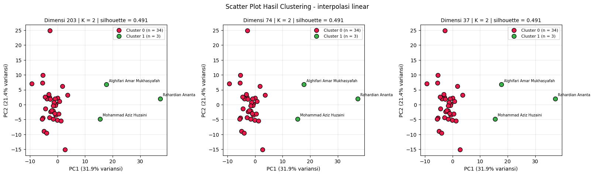
Scatter plot - interpolasi polynomial
scatter_skenario("polynomial")
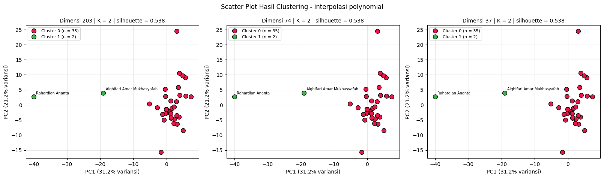
Penjelasan kode di atas adalah sebagai berikut.
Untuk tiap kombinasi skenario × dimensi, label cluster terbaik diambil dari
label_store, lalu representasiZdiproyeksikan ke dua komponen utama denganPCA(n_components=2)hanya untuk menggambar.Sumbu menampilkan persentase variansi yang dijelaskan PC1 dan PC2, sehingga pembaca dapat menilai seberapa representatif proyeksi dua dimensi tersebut.
Tiga kolom (dimensi 203, 74, 37) tampak serupa karena label dan jarak antar titik identik, sebagaimana dijelaskan pada bagian 3.
Interpretasi. Titik berwarna cluster kecil (2 sampai 3 kecamatan) dibaca terhadap gugus titik cluster besar: semakin jauh posisinya dari gugus utama, semakin berbeda pola polutannya. Ukuran cluster [34, 3] dan [35, 2] menunjukkan bahwa cluster kecil merupakan kecamatan dengan karakteristik fitur menyimpang, bukan kelompok berukuran seimbang.
7. Peta Hasil Clustering (Segmentasi Wilayah)#
Kecamatan diplot pada peta menurut koordinatnya dan diberi warna sesuai cluster sehingga segmen wilayah terlihat jelas. Seluruh daerah yang ada di basis data dipetakan. Koordinat diperoleh dari kolom daerah dengan geocoding (OpenStreetMap Nominatim) dan disimpan di koordinat_kecamatan.csv. Bila geocoding gagal karena penulisan nama yang tidak baku, dipakai koordinat manual (perkiraan pusat kecamatan) pada KOORDINAT_MANUAL.
import os
import time
import numpy as np
import pandas as pd
import matplotlib.pyplot as plt
FILE_KOORDINAT = "koordinat_kecamatan.csv"
# Kotak batas wilayah Indonesia, hanya untuk menolak hasil geocoding yang jatuh di luar negeri
BBOX_LAT = (-11.5, 6.5)
BBOX_LON = (94.5, 141.5)
# Koordinat cadangan (perkiraan pusat kecamatan) untuk penulisan daerah yang tidak dikenali geocoder.
# Dipakai hanya bila geocoding gagal; periksa kembali bila diperlukan ketepatan tinggi.
KOORDINAT_MANUAL = {
"Nunukan": (4.0730, 117.6540),
"Tikala, Manado": (1.4790, 124.8650),
"Warudoyong, Kota Sukabumi": (-6.9150, 106.9100),
"Bandung - Jogoroto, Jombang": (-7.5890, 112.2850),
"Banyu Ajuh, Perumnas, Kamal": (-7.1560, 112.7230),
"Kec. Kalianget, Sumenep": (-7.0500, 113.9300),
}
def kandidat_query(daerah):
d = " ".join(str(daerah).replace("Kec.", "").replace(" - ", " ").split())
if "," in d:
kec, kab = [s.strip() for s in d.split(",", 1)]
return [f"Kecamatan {kec}, {kab}, Indonesia", f"{kec}, {kab}, Indonesia", f"{kec}, Indonesia"]
return [f"Kecamatan {d}, Indonesia", f"{d}, Indonesia"]
def dalam_bbox(lat, lon):
return BBOX_LAT[0] <= lat <= BBOX_LAT[1] and BBOX_LON[0] <= lon <= BBOX_LON[1]
def muat_koordinat(daftar_daerah):
kd = pd.read_csv(FILE_KOORDINAT) if os.path.exists(FILE_KOORDINAT) else pd.DataFrame(columns=["daerah", "lat", "lon"])
sudah = set(kd.dropna(subset=["lat", "lon"])["daerah"])
belum = [d for d in dict.fromkeys(daftar_daerah) if d not in sudah]
if belum:
print(f"Geocoding {len(belum)} daerah yang belum punya koordinat...")
geocode = None
try:
from geopy.geocoders import Nominatim
geocode = Nominatim(user_agent="tugas-clustering-polutan-udara", timeout=10).geocode
except Exception as e:
print("geopy tidak tersedia/gagal:", repr(e)[:120])
baru = []
for d in belum:
lat = lon = np.nan
if geocode is not None:
for q in kandidat_query(d):
try:
hasil = geocode(q)
except Exception:
hasil = None
time.sleep(1.1) # patuhi batas 1 permintaan/detik Nominatim
if hasil is not None and dalam_bbox(hasil.latitude, hasil.longitude):
lat, lon = hasil.latitude, hasil.longitude
break
if np.isnan(lat) and d in KOORDINAT_MANUAL:
lat, lon = KOORDINAT_MANUAL[d]
print(f" koordinat manual dipakai untuk: {d}")
baru.append({"daerah": d, "lat": lat, "lon": lon})
baru = pd.DataFrame(baru)
kd = pd.concat([kd[~kd["daerah"].isin(belum)], baru], ignore_index=True) if len(kd) else baru
kd.to_csv(FILE_KOORDINAT, index=False)
return kd.drop_duplicates("daerah", keep="last")
semua_daerah = pd.concat([ident[sk]["daerah"] for sk in SKENARIO]).dropna().unique().tolist()
koordinat = muat_koordinat(semua_daerah)
gagal = koordinat[koordinat[["lat", "lon"]].isna().any(axis=1)]
print(f"Koordinat berhasil: {len(koordinat) - len(gagal)} dari {len(koordinat)} daerah.")
if len(gagal):
print(f"Isi manual lat/lon pada '{FILE_KOORDINAT}' (atau tambahkan ke KOORDINAT_MANUAL) untuk daerah berikut, lalu jalankan ulang sel ini:")
print(gagal["daerah"].tolist())
Geocoding 36 daerah yang belum punya koordinat...
koordinat manual dipakai untuk: Bandung - Jogoroto, Jombang
Koordinat berhasil: 36 dari 36 daerah.
Pemeriksaan koordinat
ada = koordinat.dropna(subset=["lat", "lon"])
kembar = ada[ada.duplicated(["lat", "lon"], keep=False)].sort_values(["lat", "lon"])
if len(kembar):
print("Daerah dengan koordinat identik (kemungkinan hasil geocoding tingkat kabupaten; periksa bila perlu):")
print(kembar.groupby(["lat", "lon"])["daerah"].apply(list).tolist())
else:
print("Tidak ada koordinat yang identik.")
display(koordinat.head(10))
Daerah dengan koordinat identik (kemungkinan hasil geocoding tingkat kabupaten; periksa bila perlu):
[['Baron Nganjuk', 'Kertosono, Nganjuk'], ['Jabon , Sidoarjo', 'Jabon, Sidoarjo'], ['Manyar, Gresik', 'Cerme, Gresik'], ['Bangkalan, Bangkalan', 'Kecamatan Bangkalan,Bangkalan']]
| daerah | lat | lon | |
|---|---|---|---|
| 0 | Baron Nganjuk | -7.607117 | 112.051032 |
| 1 | Nunukan | 4.134465 | 117.645168 |
| 2 | Sreseh, Sampang | -7.219002 | 113.132860 |
| 3 | Manyar, Gresik | -7.234772 | 112.564431 |
| 4 | Kamal, Bangkalan | -7.170282 | 112.728856 |
| 5 | Kedungpring Lamongan | -7.184395 | 112.198296 |
| 6 | Gresik Kota, Gresik | -7.206313 | 112.638691 |
| 7 | Waru, Pamekasan | -6.941817 | 113.551512 |
| 8 | Paciran, Lamongan | -6.870348 | 112.339679 |
| 9 | Kertosono, Nganjuk | -7.607117 | 112.051032 |
Penjelasan kode di atas adalah sebagai berikut.
kandidat_query()menyusun variasi pencarian dari kolomdaerah(nama kecamatan, kabupaten, lalu Indonesia).dalam_bbox()hanya menolak hasil di luar wilayah Indonesia, sehingga seluruh daerah pada basis data tetap dipetakan.KOORDINAT_MANUALmenjadi cadangan untuk penulisan daerah yang tidak baku sehingga tidak dikenali geocoder; hasil geocoding disimpan sebagai cache dengan jeda sesuai batas Nominatim.Keluaran menampilkan jumlah daerah yang berhasil dipetakan dan peringatan bila ada koordinat yang identik.
import os
import numpy as np
import pandas as pd
import matplotlib.pyplot as plt
PALET = ["#e6194B", "#3cb44b", "#4363d8", "#f58231", "#911eb4", "#42d4f4", "#f032e6", "#bfef45", "#9A6324", "#469990", "#800000", "#808000"]
def siapkan_titik(tabel_label, kolom_cluster):
d = tabel_label.merge(koordinat, on="daerah", how="left")
tanpa = d[d[["lat", "lon"]].isna().any(axis=1)]
if len(tanpa):
print(f"{len(tanpa)} baris tanpa koordinat tidak ditampilkan pada peta: {tanpa['daerah'].unique().tolist()}")
d = d.dropna(subset=["lat", "lon"]).copy()
# Sebar titik yang kecamatannya sama (beberapa data dari daerah yang sama) agar tidak bertumpuk
d["lat_plot"], d["lon_plot"] = d["lat"], d["lon"]
for _, grup in d.groupby(["lat", "lon"]):
if len(grup) > 1:
sudut = np.linspace(0, 2 * np.pi, len(grup), endpoint=False)
d.loc[grup.index, "lat_plot"] = grup["lat"].values + 0.012 * np.sin(sudut)
d.loc[grup.index, "lon_plot"] = grup["lon"].values + 0.012 * np.cos(sudut)
return d
def peta_interaktif(d, kolom_cluster, judul, berkas_html=None):
import folium
m = folium.Map(location=[d["lat"].mean(), d["lon"].mean()], zoom_start=8, tiles=None, control_scale=True)
# Tile OpenStreetMap standar diblokir di Colab (403), sehingga dipakai tile Esri
folium.TileLayer("https://server.arcgisonline.com/ArcGIS/rest/services/World_Imagery/MapServer/tile/{z}/{y}/{x}",
attr="Esri World Imagery", name="Citra satelit (bumi)").add_to(m)
folium.TileLayer("https://server.arcgisonline.com/ArcGIS/rest/services/World_Street_Map/MapServer/tile/{z}/{y}/{x}",
attr="Esri World Street Map", name="Peta jalan").add_to(m)
m.fit_bounds([[d["lat_plot"].min(), d["lon_plot"].min()], [d["lat_plot"].max(), d["lon_plot"].max()]])
for cl in sorted(d[kolom_cluster].unique()):
sub = d[d[kolom_cluster] == cl]
fg = folium.FeatureGroup(name=f"Cluster {cl} (n = {len(sub)})")
for _, r in sub.iterrows():
folium.CircleMarker(
location=[r["lat_plot"], r["lon_plot"]], radius=8, color="black", weight=1,
fill=True, fill_color=PALET[int(cl) % len(PALET)], fill_opacity=0.9,
tooltip=f"{r['nama']} | {r['daerah']} | Cluster {cl}").add_to(fg)
fg.add_to(m)
folium.LayerControl(collapsed=False).add_to(m)
legenda = "".join(f'<div><span style="background:{PALET[int(c) % len(PALET)]};display:inline-block;width:12px;height:12px;'
f'border:1px solid #000;margin-right:6px"></span>Cluster {c}</div>' for c in sorted(d[kolom_cluster].unique()))
html = (f'<div style="position:fixed;bottom:25px;left:25px;z-index:9999;background:white;padding:10px 12px;'
f'border:1px solid #888;border-radius:6px;font-size:13px"><b>{judul}</b>{legenda}</div>')
m.get_root().html.add_child(folium.Element(html))
if berkas_html:
m.save(berkas_html)
return m
def peta_statis(d, kolom_cluster, judul, berkas_png=None, batas_label=3):
fig, ax = plt.subplots(figsize=(11, 7))
pad = 1.0
ax.set_xlim(d["lon_plot"].min() - pad, d["lon_plot"].max() + pad)
ax.set_ylim(d["lat_plot"].min() - pad, d["lat_plot"].max() + pad)
ukuran = d[kolom_cluster].value_counts()
for cl in sorted(d[kolom_cluster].unique()):
sub = d[d[kolom_cluster] == cl]
ax.scatter(sub["lon_plot"], sub["lat_plot"], s=110, c=PALET[int(cl) % len(PALET)], edgecolors="black",
label=f"Cluster {cl} (n = {len(sub)})", zorder=3)
if ukuran[cl] <= batas_label: # beri label daerah pada cluster kecil
for _, r in sub.iterrows():
ax.annotate(r["daerah"], (r["lon_plot"], r["lat_plot"]), fontsize=8, xytext=(5, 5),
textcoords="offset points", color="white", bbox=dict(boxstyle="round,pad=0.2", fc="black", alpha=0.6))
ax.set_aspect(1 / np.cos(np.deg2rad(d["lat"].mean())))
# Peta dasar citra satelit Esri agar titik tampil di atas peta bumi
try:
import contextily as ctx
dimuat = False
for sumber in (ctx.providers.Esri.WorldImagery, ctx.providers.Esri.WorldStreetMap):
try:
ctx.add_basemap(ax, crs="EPSG:4326", source=sumber, zorder=0)
dimuat = True
break
except Exception:
continue
if not dimuat:
print("Peta dasar statis tidak dapat dimuat (cek internet).")
except ImportError:
print("contextily belum terpasang.")
ax.set_title(judul, fontsize=10)
ax.set_xlabel("Bujur (lon)")
ax.set_ylabel("Lintang (lat)")
ax.grid(True, alpha=0.3)
ax.legend(title="Segmen")
plt.tight_layout()
if berkas_png:
fig.savefig(berkas_png, dpi=150)
plt.show()
os.makedirs("peta_hasil", exist_ok=True)
def data_peta(sk, target):
"""Menyiapkan titik peta untuk satu kombinasi skenario x dimensi dengan K terbaiknya."""
r = terbaik_kombinasi[(terbaik_kombinasi["skenario"] == sk) & (terbaik_kombinasi["dimensi_target"] == target)].iloc[0]
k = int(r["K"])
tabel = ident[sk].copy()
tabel["cluster"] = label_store[(sk, target, k)]
return siapkan_titik(tabel, "cluster"), r, k
def peta_dimensi(sk, target):
"""Peta statis untuk satu kombinasi; peta interaktif versi HTML disimpan ke folder peta_hasil."""
d, r, k = data_peta(sk, target)
peta_statis(d, "cluster", f"Peta Clustering | interpolasi {sk} | dimensi {target} | K = {k} | silhouette {r['silhouette']:.3f}",
f"peta_hasil/peta_{sk}_dim{target}_k{k}.png")
peta_interaktif(d, "cluster", f"Interpolasi {sk} | dim {target} | K = {k}", f"peta_hasil/peta_{sk}_dim{target}_k{k}.html")
def peta_interaktif_terbaik(sk):
target = int(terbaik_skenario[terbaik_skenario["skenario"] == sk].iloc[0]["dimensi_target"])
d, r, k = data_peta(sk, target)
return peta_interaktif(d, "cluster", f"Interpolasi {sk} | dim {target} | K = {k}")
def segmentasi_wilayah(sk):
target = int(terbaik_skenario[terbaik_skenario["skenario"] == sk].iloc[0]["dimensi_target"])
d, r, k = data_peta(sk, target)
return d.groupby("cluster")["daerah"].apply(lambda s: "; ".join(sorted(s.unique()))).reset_index(name="daerah_anggota")
Penjelasan kode di atas adalah sebagai berikut.
siapkan_titik()menggabungkan label cluster dengan koordinat dan menyebar titik dari kecamatan yang sama agar tidak bertumpuk.peta_statis()menggambar titik cluster di atas citra satelit Esri (viacontextily); daerah pada cluster kecil diberi label agar mudah diidentifikasi.peta_interaktif()membuat peta Folium dengan satu lapisan per cluster, tooltip nama dan daerah, serta legenda.peta_dimensi(),peta_interaktif_terbaik(), dansegmentasi_wilayah()dipanggil pada sel terpisah di bawah agar keluaran tiap peta tidak menumpuk.
7.1 Peta Interpolasi Linier#
Dimensi 203
peta_dimensi("linear", 203)
Dimensi 74
peta_dimensi("linear", 74)
Dimensi 37
peta_dimensi("linear", 37)
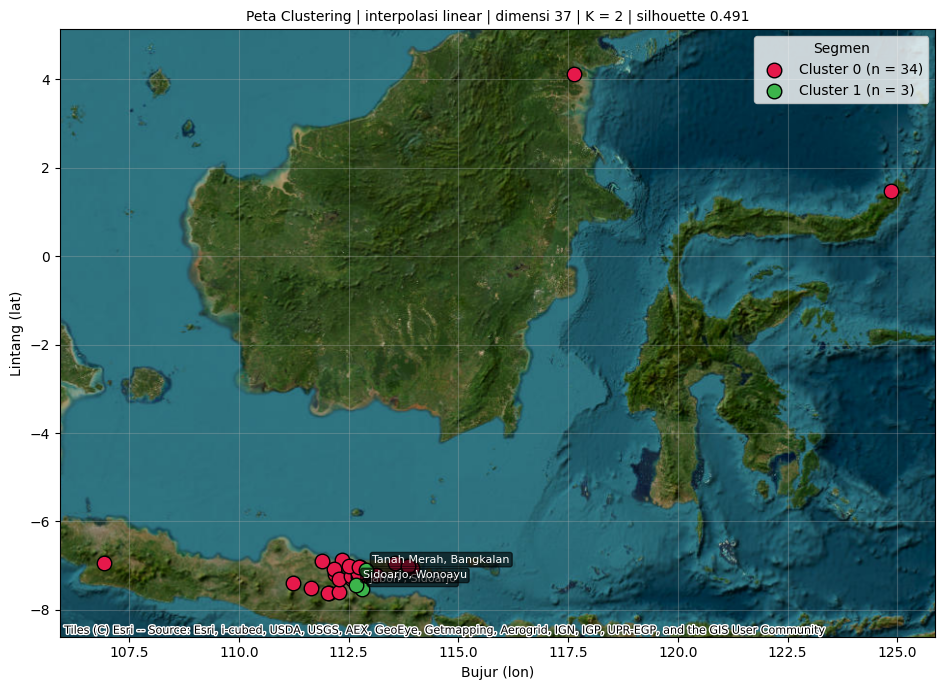
Peta interaktif (kombinasi terbaik) - interpolasi linier
display(peta_interaktif_terbaik("linear"))
Segmentasi daerah per cluster - interpolasi linier
display(segmentasi_wilayah("linear"))
| cluster | daerah_anggota | |
|---|---|---|
| 0 | 0 | Asemrowo, Surabaya; Bandung - Jogoroto, Jomban... |
| 1 | 1 | Jabon , Sidoarjo; Sidoarjo, Wonoayu; Tanah Mer... |
7.2 Peta Interpolasi Polynomial#
Dimensi 203
peta_dimensi("polynomial", 203)
Dimensi 74
peta_dimensi("polynomial", 74)
Dimensi 37
peta_dimensi("polynomial", 37)
Peta interaktif (kombinasi terbaik) - interpolasi polynomial
display(peta_interaktif_terbaik("polynomial"))
Segmentasi daerah per cluster - interpolasi polynomial
display(segmentasi_wilayah("polynomial"))
| cluster | daerah_anggota | |
|---|---|---|
| 0 | 0 | Asemrowo, Surabaya; Bandung - Jogoroto, Jomban... |
| 1 | 1 | Jabon, Sidoarjo; Sidoarjo, Wonoayu |
Seluruh peta statis (PNG) dan interaktif (HTML) tersimpan di folder peta_hasil.
Interpretasi. Cluster kecil beranggotakan Jabon dan Wonoayu (Sidoarjo) pada kedua skenario, ditambah satu kecamatan lain pada skenario linier; seluruh daerah lainnya masuk cluster besar. Karena label cluster ditentukan oleh kemiripan pola polutan, bukan oleh letak geografis, segmen yang terbentuk tidak mengikuti batas wilayah administrasi. Dimensi 203, 74, dan 37 memberi label yang sama sehingga ketiga peta untuk satu skenario identik.
8. Implementasi Alur Kerja (Workflow) Clustering KNIME#
KNIME Analytics Platform digunakan untuk membangun alur kerja (workflow) visual yang mengulang proses pada Python, sehingga hasilnya dapat dibandingkan. Alur kerja terdiri atas pengambilan data dari MySQL, praproses, reduksi dimensi (203 → 74 → 37), pengelompokan dengan k-Means, visualisasi scatter plot dan peta, serta pengukuran kualitas dengan Silhouette Coefficient. Alur dijalankan terpisah untuk dua skenario, yaitu interpolasi linier dan polynomial.
8.1 MySQL Connector#
Node ini membuka koneksi KNIME ke database MySQL kelas (host, port 3306, nama database, user, dan password). Kredensial disimpan melalui Workflow Credentials agar password tidak tertulis pada konfigurasi node. Pada beberapa versi KNIME, driver JDBC MySQL perlu didaftarkan terlebih dahulu di Preferences → KNIME → Databases.
[Tangkapan layar: konfigurasi MySQL Connector, password disembunyikan]
8.2 DB Table Selector#
Node ini memilih tabel sumber untuk tiap skenario: ekstraksi_fitur_linear dan ekstraksi_fitur_polynomial. Kedua skenario diproses sebagai dua cabang paralel yang terpisah.
[Tangkapan layar: DB Table Selector]
8.3 DB Reader#
Node ini membaca tabel terpilih ke KNIME sebagai tabel data berisi tiga kolom identitas (id, nama, daerah) dan 204 kolom fitur gabungan dari tiga polutan, dengan satu baris untuk setiap kecamatan.
[Tangkapan layar: DB Reader dan tabel hasil]
8.4 Persiapan Fitur#
Tiga node dipakai berurutan agar masukan clustering setara dengan praproses pada Python:
Column Filter mengeluarkan
id,nama, dandaerahdari kolom analisis, karena ketiganya identitas dan bukan fitur.Missing Value mengisi
NaNdengan median, dan kolom bernilai konstan dikeluarkan karena tidak membedakan antar kecamatan.Normalizer (Z-Score) menyamakan skala fitur, setara dengan
StandardScalerpada Python. Langkah ini penting karena K-Means berbasis jarak sehingga fitur berskala besar akan mendominasi bila tidak distandardisasi.
[Tangkapan layar: Column Filter, Missing Value, Normalizer]
8.5 PCA (203 → 74 → 37)#
Reduksi dimensi dilakukan pada tiga cabang: tanpa PCA (203 fitur), PCA 74 dimensi, dan PCA 37 dimensi, dengan mengatur Target dimensions pada node PCA. Jumlah komponen dibatasi oleh jumlah baris data; karena hanya ada 37 kecamatan, cabang 74 dimensi menghasilkan komponen yang sama dengan cabang 37 dimensi, dan keduanya tidak mengubah jarak antar titik.
[Tangkapan layar: pengaturan PCA]
8.6 k-Means#
Node ini mengelompokkan kecamatan pada tiap cabang dimensi dengan k terbaik dari eksperimen Python (bagian 4), yaitu k = 2. Inisialisasi pusat cluster bawaan KNIME berbeda dari k-means++ pada scikit-learn, sehingga label cluster dan skor silhouette dapat sedikit berbeda dari hasil Python meskipun polanya serupa.
[Tangkapan layar: pengaturan k-Means dan hasil cluster]
8.7 Scatter Plot#
Node Color Manager memberi warna pada tiap cluster, kemudian node Scatter Plot menampilkan posisi kecamatan pada bidang dua komponen PCA pertama menurut label cluster. Visualisasi ini setara dengan scatter plot pada bagian 6.1 di sisi Python dan memperlihatkan kecamatan yang terpisah dari kelompok utama.
[Tangkapan layar: Scatter Plot hasil clustering KNIME]
8.8 Silhouette Coefficient#
Node ini mengukur kualitas pemisahan cluster secara numerik, baik per cluster maupun keseluruhan (overall). Nilai overall dibandingkan dengan silhouette_score pada Python (bagian 9).
[Tangkapan layar: keluaran Silhouette Coefficient]
8.9 Peta Hasil Cluster#
Koordinat dari koordinat_kecamatan.csv dibaca dengan CSV Reader, digabung dengan hasil k-Means menggunakan Joiner pada kolom daerah, diberi warna menurut cluster dengan Color Manager, lalu ditampilkan dengan node peta (misalnya OSM Map View) atau Scatter Plot dengan sumbu lon dan lat. Seluruh daerah pada basis data diikutkan.
[Tangkapan layar: workflow dan peta hasil clustering KNIME]
9. Perbandingan Hasil Python dan KNIME#
Hasil Silhouette Coefficient dari Python dibandingkan dengan keluaran node Silhouette Coefficient pada KNIME untuk tiap skenario dan dimensi. Kolom Python terisi otomatis dari eksperimen bagian 4, sedangkan kolom KNIME diisi dari nilai overall pada node KNIME.
perbandingan = terbaik_kombinasi[["skenario", "dimensi_target", "dimensi_efektif", "K", "silhouette", "ukuran_cluster"]].copy()
perbandingan = perbandingan.rename(columns={"dimensi_target": "dimensi", "silhouette": "silhouette_python"})
perbandingan["silhouette_python"] = perbandingan["silhouette_python"].round(4)
perbandingan["silhouette_knime"] = "" # isi dari keluaran node Silhouette Coefficient (overall) di KNIME
display(perbandingan)
| skenario | dimensi | dimensi_efektif | K | silhouette_python | ukuran_cluster | silhouette_knime | |
|---|---|---|---|---|---|---|---|
| 0 | linear | 203 | 198 | 2 | 0.4909 | [34, 3] | |
| 1 | linear | 74 | 37 | 2 | 0.4909 | [34, 3] | |
| 2 | linear | 37 | 37 | 2 | 0.4909 | [34, 3] | |
| 3 | polynomial | 203 | 199 | 2 | 0.5375 | [35, 2] | |
| 4 | polynomial | 74 | 37 | 2 | 0.5375 | [35, 2] | |
| 5 | polynomial | 37 | 37 | 2 | 0.5375 | [35, 2] |
Selisih kecil antara Python dan KNIME wajar terjadi karena perbedaan inisialisasi pusat cluster (k-means++ pada scikit-learn dan inisialisasi bawaan pada KNIME). Bila K, ukuran cluster, dan anggota cluster kecil sama, kedua implementasi dinilai konsisten.
Kesimpulan#
Ringkasan berikut dibangkitkan dari hasil eksperimen pada sel di bawah sehingga angkanya selalu sesuai dengan data yang dijalankan.
print("RINGKASAN HASIL EKSPERIMEN CLUSTERING")
print("=" * 70)
print(f"Sumber data : {sumber_data}")
print(f"Jumlah sampel : {N_SAMPEL} kecamatan")
print(f"Jumlah fitur : {X_scaled['linear'].shape[1]} (linier), {X_scaled['polynomial'].shape[1]} (polynomial) setelah praproses")
print(f"Dimensi diuji : {DIMENSI_TARGET}; K diuji: {K_RANGE[0]} sampai {K_RANGE[-1]}")
print()
for _, r in terbaik_skenario.iterrows():
ukuran = r["ukuran_cluster"]
print(f"- Skenario {r['skenario']}: terbaik pada dimensi {int(r['dimensi_target'])} "
f"(efektif {int(r['dimensi_efektif'])}), K = {int(r['K'])}, silhouette = {r['silhouette']:.4f}, ukuran cluster = {ukuran}")
print()
print(f"Kombinasi terbaik keseluruhan: skenario {terbaik_global['skenario']}, dimensi {int(terbaik_global['dimensi_target'])}, "
f"K = {int(terbaik_global['K'])}, silhouette = {terbaik_global['silhouette']:.4f}")
tunggal = terbaik_skenario[terbaik_skenario["min_anggota"] < 2]
if len(tunggal):
print("\nCatatan interpretasi: solusi terbaik pada skenario "
f"{', '.join(tunggal['skenario'])} memuat cluster beranggota tunggal. Skor silhouette yang tinggi pada kondisi ini "
"umumnya berasal dari satu kecamatan dengan nilai fitur ekstrem (outlier) yang dipisahkan sendiri, bukan dari "
"segmentasi wilayah yang seimbang. Jalankan ulang dengan MIN_ANGGOTA = 2 untuk melihat solusi terbaik tanpa cluster tunggal.")
else:
print("\nSemua solusi terbaik memiliki cluster dengan minimal 2 anggota.")
dim_sama = tabel_dimensi.groupby("skenario")["dimensi_efektif"].nunique()
if (dim_sama < len(DIMENSI_TARGET)).any():
print(f"Catatan dimensi: karena jumlah sampel ({N_SAMPEL}) membatasi jumlah komponen PCA, sebagian dimensi target "
"memiliki dimensi efektif yang sama dan hasil clustering-nya identik.")
RINGKASAN HASIL EKSPERIMEN CLUSTERING
======================================================================
Sumber data : MySQL (Aiven)
Jumlah sampel : 37 kecamatan
Jumlah fitur : 198 (linier), 199 (polynomial) setelah praproses
Dimensi diuji : [203, 74, 37]; K diuji: 2 sampai 10
- Skenario linear: terbaik pada dimensi 37 (efektif 37), K = 2, silhouette = 0.4909, ukuran cluster = [34, 3]
- Skenario polynomial: terbaik pada dimensi 37 (efektif 37), K = 2, silhouette = 0.5375, ukuran cluster = [35, 2]
Kombinasi terbaik keseluruhan: skenario polynomial, dimensi 37, K = 2, silhouette = 0.5375
Semua solusi terbaik memiliki cluster dengan minimal 2 anggota.
Catatan dimensi: karena jumlah sampel (37) membatasi jumlah komponen PCA, sebagian dimensi target memiliki dimensi efektif yang sama dan hasil clustering-nya identik.
Kesimpulan Akademis#
Data dan dimensi. Gabungan tiga polutan menghasilkan 204 kolom fitur (198 dan 199 kolom setelah kolom konstan dibuang pada skenario linier dan polynomial). Dengan hanya 37 kecamatan, reduksi 203 → 74 → 37 menghasilkan representasi yang setara secara jarak sehingga hasil clustering identik pada ketiga dimensi.
Jumlah cluster terbaik. Berdasarkan Silhouette Coefficient, K = 2 terbaik pada kedua skenario: 0,4909 (linier, struktur lemah) dan 0,5375 (polynomial, struktur wajar). Interpolasi polynomial memberi pemisahan cluster yang sedikit lebih baik.
Pola segmentasi. Cluster terbentuk dari satu kelompok besar dan satu kelompok kecil (2 sampai 3 kecamatan, di antaranya Jabon dan Wonoayu di Sidoarjo). Hasil ini lebih menunjukkan adanya kecamatan dengan pola polutan ekstrem daripada segmentasi wilayah yang seimbang.
Saran. Penelitian lanjutan dapat menguji ketahanan hasil terhadap outlier (misalnya dengan menyingkirkan kecamatan ekstrem atau memakai algoritma lain), menambah jumlah kecamatan, dan memeriksa kualitas data sumber.